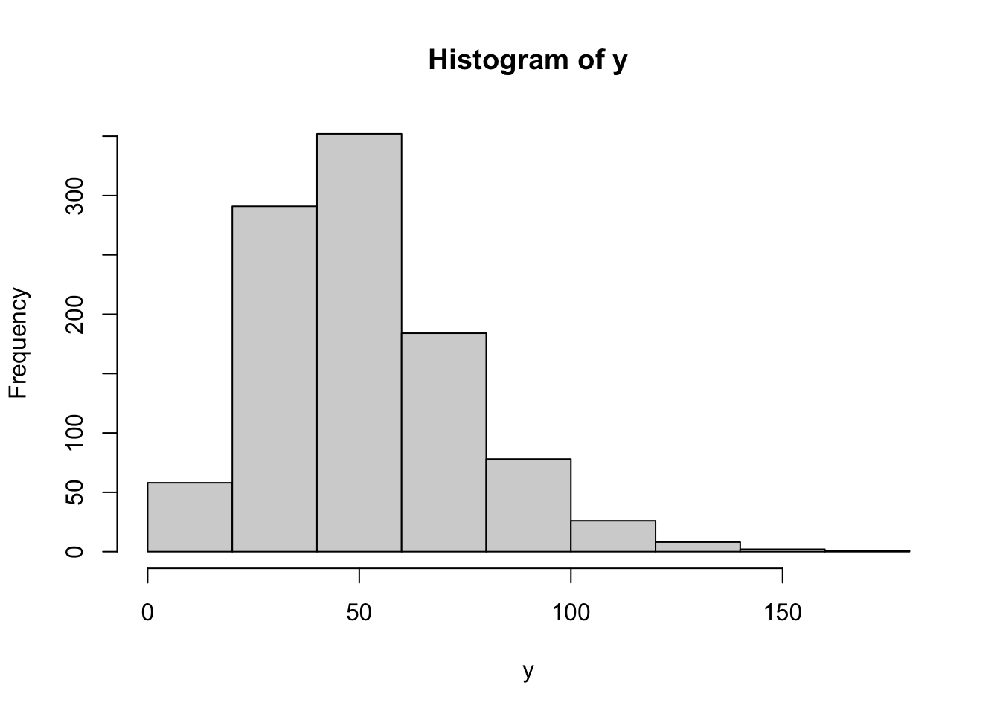
2 Modeling Randomness
Learning Objectives
- To be able to generate random numbers using the Kotlin Simulation Library (KSL)
- To understand how to control random number streams within the KSL
- To be able to generate random variates using the KSL
- To understand how to use the KSL for basic probability computations
This chapter overviews the functionality of the KSL for modeling randomness within simulation models. The focus of this chapter is on getting started using the basic classes and functionality of the KSL. The theory and methods related to random number generation and random variate generation are provided in Appendix A. In that appendix, the underlying theory of the inverse transform method, convolution, acceptance rejection, and particular distribution modeling concepts are reviewed. In addition, the concepts of pseudo-random number generation are discussed. This chapter assumes that the reader has some familiarity with the general concepts presented in Appendix A.
Note
This chapter provides a series of example Kotlin code that illustrates the use of KSL constructs for generating random numbers and random variates. The full source code of the examples can be found in the accompanying KSLExamples project associated with the KSL repository. The files for each example of this chapter can be found here.
2.1 Random Number Generator
This section discusses how random number generation is implemented within the KSL. The purpose is to present how these concepts can be put into practice.
The random number generator used within the KSL is described in L’Ecuyer et al. (2002) and has excellent statistical properties. It is based on the combination of two multiple recursive generators resulting in a period of approximately \(3.1 \times 10^{57}\). This is the same generator that is now used in many commercial simulation packages. The generator used in the KSL is defined by the following equations.
\[ \begin{aligned} R_{1,i} & = (1,403,580 R_{1,i-2} - 810,728 R_{1,i-3})\bmod (2^{32}-209)\\ R_{2,i} & = (527,612R_{2,i-1} - 1,370,589 R_{2,i-3})\bmod (2^{32}-22,853)\\ Y_i & = (R_{1,i}-R_{2,i})\bmod(2^{32}-209)\\ U_i & = \frac{Y_i}{2^{32}-209} \end{aligned} \]
To illustrate how this generator works, consider generating an initial sequence of pseudo-random numbers from the generator. The generator takes as its initial seed a vector of six initial values \((R_{1,0}, R_{1,1}, R_{1,2}, R_{2,0}, R_{2,1}, R_{2,2})\). The first initially generated value, \(U_{i}\), will start at index \(3\). To produce five pseudo random numbers using this generator we need an initial seed vector, such as: \[\lbrace R_{1,0}, R_{1,1}, R_{1,2}, R_{2,0}, R_{2,1}, R_{2,2} \rbrace = \lbrace 12345, 12345, 12345, 12345, 12345, 12345\rbrace\]
Using the recursive equations, the resulting random numbers are as follows:
| i=3 | i=4 | i=5 | i=6 | i=7 | |||
|---|---|---|---|---|---|---|---|
| \(Z_{1,i-3}=\) | 12345 | 12345 | 12345 | 3023790853 | 3023790853 | ||
| \(Z_{1,i-2}=\) | 12345 | 12345 | 3023790853 | 3023790853 | 3385359573 | ||
| \(Z_{1,i-1}=\) | 12345 | 3023790853 | 3023790853 | 3385359573 | 1322208174 | ||
| \(Z_{2,i-3}=\) | 12345 | 12345 | 12345 | 2478282264 | 1655725443 | ||
| \(Z_{2,i-2}=\) | 12345 | 12345 | 2478282264 | 1655725443 | 2057415812 | ||
| \(Z_{2,i-1}=\) | 12345 | 2478282264 | 1655725443 | 2057415812 | 2070190165 | ||
| \(Z_{1,i}=\) | 3023790853 | 3023790853 | 3385359573 | 1322208174 | 2930192941 | ||
| \(Z_{2,i}=\) | 2478282264 | 1655725443 | 2057415812 | 2070190165 | 1978299747 | ||
| \(Y_i=\) | 545508589 | 1368065410 | 1327943761 | 3546985096 | 951893194 | ||
| \(U_i=\) | 0.127011122076 | 0.318527565471 | 0.309186015655 | 0.82584686312 | 0.221629915834 |
While it is beyond the scope of this document to explore the theoretical underpinnings of this generator, it is important to note that the generator allows multiple independent streams to be defined along with sub-streams.
The fantastic thing about this generator is the sheer size of the period. Based on their analysis, L’Ecuyer et al. (2002) state that it will be “approximately 219 years into the future before average desktop computers will have the capability to exhaust the cycle of the (generator) in a year of continuous computing.” In addition to the period length, the generator has an enormous number of streams, approximately \(1.8 \times 10^{19}\) with stream lengths of \(1.7 \times 10^{38}\) and sub-streams of length \(7.6 \times 10^{22}\) numbering at \(2.3 \times 10^{15}\) per stream. Clearly, with these properties, you do not have to worry about overlapping random numbers when performing simulation experiments. The generator was subjected to a rigorous battery of statistical tests and is known to have excellent statistical properties.
2.1.1 Random Package
The concepts within L’Ecuyer et al. (2002) have been implemented within the ksl.utilities.random.rng package in the KSL. A key organizing principle for the random package is the use of interfaces. An interface allows classes to act like other classes. It is a mechanism by which a class can promise to have certain behaviors (i.e. methods). The KSL utilizes interfaces to separate random number generation concepts from stream control concepts.
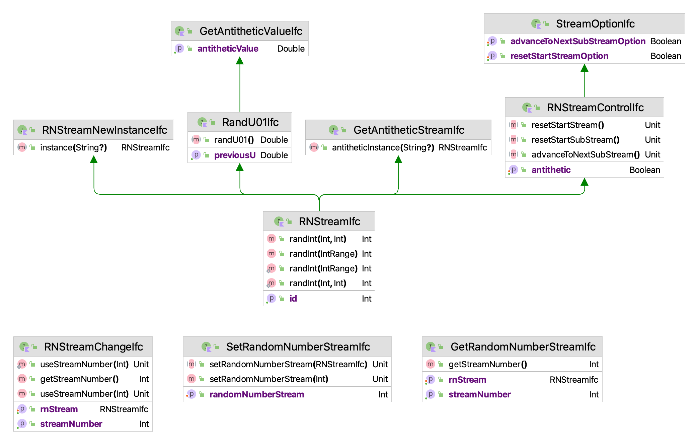
Figure 2.1 shows the important interfaces within the ksl.utilities.random.rng package. The RandU01Ifc defines the methods for getting the next pseudo-random number and the previous pseudo-random number via randU01() and previousU. The randInt(i: Int, j: Int) method can be used to generate a random integer uniformly over the range from \(i\) to \(j\). The GetAntitheticStreamIfc and RNStreamNewInstanceIfc interfaces allow a new object instance to be created from the stream. In the case of the GetAntitheticStreamIfc interface the created stream will produce antithetic variates from the stream. If \(U\) is a pseudo-random number, then \(1-U\) is the antithetic variate of \(U\).
The RNStreamControlIfc defines methods for controlling the underlying stream of pseudo-random numbers.
resetStartStream()- positions the random number stream at the beginning of its sequence. This is the same location in the stream as assigned when the random number stream was created and initialized.resetStartSubstream()- resets the position of the random number stream to the start of the current substream. If the random number stream has advanced into the substream, then this method resets to the beginning of the substream.advanceToNextSubStream()- positions the random number stream at the beginning of its next substream. This method move through the current substream and positions the stream at the beginning of the next substream.antitheticindicates to the stream to start producing antithetic variates. If the option is true, the stream should start producing antithetic variates with the next call torandU01().If the option is false, the stream should stop producing antithetic variates.
The StreamOptionIfc defines methods for automating the control of the stream during simulation runs.
advanceToNextSubStreamOption- Indicates that the stream will be advanced to the next substream for the beginning of the next simulation replication.resetStartStreamOption- Indicates that the underlying stream will be reset to its starting point for the beginning of the next simulation replication.
The RNStreamIfc interface assumes that the underlying pseudo-random number generator can produce multiple streams that can be further divided into substreams. The reset methods allow the user to move within the streams. Classes that implement the RNStreamControlIfc can manipulate the streams in a well-defined manner.
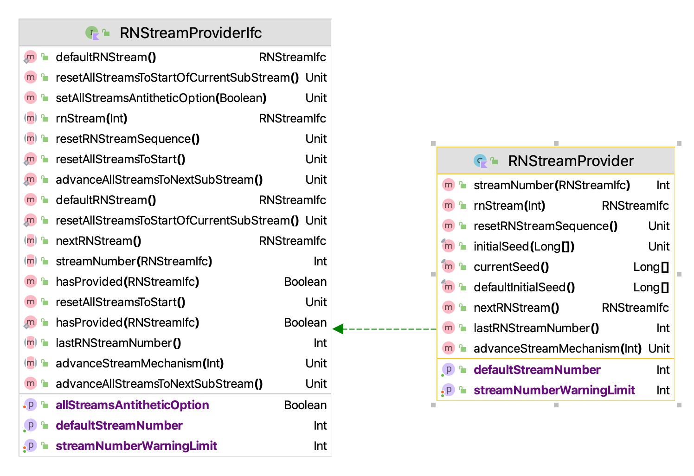
To create a concrete instance of a stream, we must have a random number stream provider. This functionality is defined by the RNStreamProviderIfc interface and its default implementation, RNStreamProvider. Figure 2.2 illustrates the functionality available for creating random number streams. This interface conceptualizes the creation of random number streams as a process of making a sequence of streams numbered 1, 2, 3, …
A random number stream provider must define a default stream, which can be retrieved via the defaultRNStream() method. By default, for the KSL, the default stream is the first stream created and is labeled with the sequence number 1. The sequence number of a stream can be used to retrieve a particular stream from the provider. The following methods allow for creation and access to streams.
nextRNStream()- returns the next random number stream associated with the provider. Each call tonextRNStream()makes a new stream in the sequence of streams.lastRNStreamNumber()- returns the number of the stream that was last made. This indicates how many streams have been made. If \(0\) is returned, then no streams have been made by the provider.rnStream(k : Int)- returns the \(k^{th}\) stream. If \(k\) is greater thanlastRNStreamNumber()thenlastRNStreamNumber()is advanced according to the additional number of streams by creating any intermediate streams. For example, iflastRNStreamNumber()= 10 and k = 15, then streams 11, 12, 13, 14, 15 are assumed provided and stream 15 is returned andlastRNStreamNumber()now equals 15. If \(k\) is less than or equal tolastRNStreamNumber(), then no new streams are created andlastRNStreamNumber()stays at its current value and the \(k^{th}\) stream is returned.streamNumber(RNStreamIfc stream)- returns the stream number of the instance of a stream.advanceStreamMechanism(int n)- advances the underlying stream mechanism by the specified number of streams, without actually creating the streams. The value oflastRNStreamNumber()remains the same after advancing through the streams. In other words, this method should act as ifnextRNStream()was not called but advance the underlying stream mechanism as if \(n\) streams had been provided.resetRNStreamSequence()- Causes the random number stream provider to act as if has never created any streams. Thus, the next call tonextRNStream()will return the \(1^{st}\) stream.
The random number stream provider also facilitates the control of all streams that have been created. This functionality is similar to how the position within an individual stream can be manipulated, except the provider performs the functionality on all streams that it has provided The following methods perform this functionality.
resetAllStreamsToStart()- resets all created streams to the start of their stream.resetAllStreamsToStartOfCurrentSubStream()- resets all created streams to the start of their current sub-stream.advanceAllStreamsToNextSubstream()- advances all created streams to the start of their next sub-stream.setAllStreamsAntitheticOption(option: Boolean)- changes all created streams to have their antithetic option either off = false or on = true.
Many random number generators require the specification of a seed to start the generated sequence. Even though the generator within the KSL uses seeds, there really is no need to specify the seeds because of the well defined methods for moving within the streams. However, if you really want to get into the details and specify seeds, the you should review the RNStreamFactory class, which directly implements the random number generator discussed in L’Ecuyer et al. (2002).
Now, let’s illustrate how to create and manipulate streams.
2.1.2 Creating and Using Streams
To create a random number stream, the user must utilize an instance of RNStreamProvider. This process is illustrated in in the following code. This code creates two instances of RNStreamProvider and gets the first stream from each instance. The instances of RNStreamProvider use the exact same underlying default seeds. Thus, they produce exactly the same sequence of streams.
Example 2.1 (RNStreamProvider) This example illustrates how to create a RNStreamProvider, create streams, and generate pseudo-random numbers from the stream.
fun main() {
// make a provider for creating streams
val p1 = RNStreamProvider()
// get the first stream from the provider
val p1s1 = p1.rnStream(streamNum = 1)
// make another provider, the providers are identical
val p2 = RNStreamProvider()
// Thus, the first streams returned are identical
val p2s1 = p2.rnStream(streamNum = 1)
print(String.format("%3s %15s %15s %n", "n", "p1s1", "p2s1"))
for (i in 1..5) {
print(String.format("%3d %15f %15f %n", i, p1s1.randU01(), p2s1.randU01()))
}
}Thus, in the following code output, the randomly generated values are exactly the same for the two streams.
n p1s1 p2s1
1 0.127011 0.127011
2 0.318528 0.318528
3 0.309186 0.309186
4 0.825847 0.825847
5 0.221630 0.221630 There is is really very little need for the general programmer to create a RNStreamProvider because the KSL supplies a default provider that can be used to provide a virtually infinite number of streams. The need for directly accessing the functionality of RNStreamProvider is for explicit control of stream creation in such situations like running code on different computers in parallel. While the providers produce the same streams, you can force one provider to be different from another provider by manipulating the seeds. The function, advanceStreamMechanism(n: Int), essentially manipulates the underlying seed vector by advancing the seed values as if n streams have been created. If this function is used prior to creating any streams, you have essentially set the starting seed value, causing the created streams to be different from the default starting values. In addition, the provider can control all streams that it produces. So, unless you are trying to do some advanced work that involves coordinating multiple streams, you should not need to create multiple instances of RNStreamProvider.
Because the most common use case is to just have a single provider of streams, the KSL facilitates this through the KSLRandom object. The KSLRandom object has a wide range of methods to facilitate random variate generation.The most important methods include:
nextRNStream()- calls the underlying defaultRNStreamProviderto create a new random number streamrnStream(int k)- returns the \(k^{th}\) stream from the defaultRNStreamProviderdefaultRNStream()- calls the underlying defaultRNStreamProviderfor its default stream
In the following code example, these methods are used to create streams that are used to generate random numbers. The first line of the code uses the static method defaultRNStream() of KSLRandom to get the default stream and then generates three random numbers. The stream is then advanced and three new random numbers are generated. Then,the stream is reset to its starting (initial seed) and it then repeats the original values. Finally, the a new stream is created via KSLRandom.nextRNStream() and then used to generate new random numbers. From a conceptual standpoint, each stream contains an independent sequence of random numbers from any other stream (unless of course they are made from different providers). They are conceptually infinite and independent due to their enormous periods.
Example 2.2 (KSLRandom) This example illustrates how to use the KSLRandom class to create streams, advance the stream, and reset the stream.
fun main() {
val s1 = KSLRandom.defaultRNStream()
println("Default stream is stream 1")
println("Generate 3 random numbers")
for (i in 1..3) {
println("u = " + s1.randU01())
}
s1.advanceToNextSubStream()
println("Advance to next sub-stream and get some more random numbers")
for (i in 1..3) {
println("u = " + s1.randU01())
}
println("Notice that they are different from the first 3.")
s1.resetStartStream()
println("Reset the stream to the beginning of its sequence")
for (i in 1..3) {
println("u = " + s1.randU01())
}
println("Notice that they are the same as the first 3.")
println("Get another random number stream")
val s2 = KSLRandom.nextRNStream()
println("2nd stream")
for (i in 1..3) {
println("u = " + s2.randU01())
}
println("Notice that they are different from the first 3.")
}The resulting output from this code is as follows. Again, the methods of the RNStreamControlIfc interface that permit movement within a stream are extremely useful for controlling the randomness associated with a simulation.
Default stream is stream 1
Generate 3 random numbers
u = 0.12701112204657714
u = 0.3185275653967945
u = 0.3091860155832701
Advance to next sub-stream and get some more random numbers
u = 0.07939898979733463
u = 0.4803395047575741
u = 0.8583222470551328
Notice that they are different from the first 3.
Reset the stream to the beginning of its sequence
u = 0.12701112204657714
u = 0.3185275653967945
u = 0.3091860155832701
Notice that they are the same as the first 3.
Get another random number stream
2nd stream
u = 0.7595818622487196
u = 0.9783105732613708
u = 0.6851358081931826
Notice that they are different from the first 3.2.1.3 Common Random Numbers
Common random numbers (CRN) is a Monte Carlo method that has different experiments utilize the same random numbers. CRN is a variance reduction technique, discussed more fully in Chapter 9, that allows the experimenter to block out the effect of the random numbers used in the experiment. To facilitate the use of common random numbers the KSL has the aforementioned stream control mechanisms. One way to implement common random numbers is to use two instances of RNStreamProvider as was previously illustrated. In that case, the two providers produce the same sequence of streams and thus those streams can be used on the different experiments. An alternative method that does not require the use of two providers is to create a copy of the stream directly from the stream instance. The following code clones the stream instance.
Example 2.3 (Cloning for CRN) This example clones an instance of a stream and uses it to generate common random numbers.
fun main() {
// get the default stream
val s = KSLRandom.defaultRNStream()
// make a clone of the stream
val clone = s.crnInstance()
print(String.format("%3s %15s %15s %n", "n", "U", "U again"))
for (i in 1..3) {
print(String.format("%3d %15f %15f %n", i, s.randU01(), clone.randU01()))
}
}Since the instances have the same underlying state when the clone is created, they produce the same random numbers. Please note that the cloned stream instance is not provided by the underlying RNStreamProvider and thus it is not part of the set of streams managed or controlled by the provider.
n U U again
1 0.127011 0.127011
2 0.318528 0.318528
3 0.309186 0.309186 An alternative method is to just use the resetStartStream() method of the stream to reset the stream to the desired location in its sequence and then reproduce the random numbers. This is illustrated in the following code.
Example 2.4 (Resetting the stream for CRN) This example resets the stream to generate common random numbers.
fun main() {
val s = KSLRandom.defaultRNStream()
// generate regular
print(String.format("%3s %15s %n", "n", "U"))
for (i in 1..3) {
val u = s.randU01()
print(String.format("%3d %15f %n", i, u))
}
// reset the stream and generate again
s.resetStartStream()
println()
print(String.format("%3s %15s %n", "n", "U again"))
for (i in 1..3) {
val u = s.randU01()
print(String.format("%3d %15f %n", i, u))
}
}Notice that the generated numbers are the same.
n U
1 0.127011
2 0.318528
3 0.309186
n U again
1 0.127011
2 0.318528
3 0.309186 Thus, an experiment can be executed, then the random numbers reset to the desired location. Then, by changing the experimental conditions and re-running the simulation, the same random numbers are used. If many streams are used, then by accessing the RNStreamProvider you can reset all of the controlled streams with one call and then perform the next experiment.
2.1.4 Creating and Using Antithetic Streams
Recall that if a pseudo-random number is called \(U\) then its antithetic value is \(1-U\). There are a number of methods to access antithetic values. The simplest is to create an antithetic instance from a given stream. This is illustrated in the following code. Please note that the antithetic stream instance is not provided by the underlying RNStreamProvider and thus it is not part of the set of streams managed or controlled by the provider. The new instance functionality directly creates the new stream based on the current stream so that it has the same underling state and it is set to produce antithetic values.
Example 2.5 (Generating Antithetic Numbers) This example illustrates how to create an antithetic instance of a stream and generate antithetic random numbers.
fun main() {
// get the default stream
val s = KSLRandom.defaultRNStream()
// make its antithetic version
val ans = s.antitheticInstance()
print(String.format("%3s %15s %15s %15s %n", "n", "U", "1-U", "sum"))
for (i in 1..5) {
val u = s.randU01()
val au = ans.randU01()
print(String.format("%3d %15f %15f %15f %n", i, u, au, u + au))
}
}Notice that the generated values sum to 1.0.
n U 1-U sum
1 0.127011 0.872989 1.000000
2 0.318528 0.681472 1.000000
3 0.309186 0.690814 1.000000
4 0.825847 0.174153 1.000000
5 0.221630 0.778370 1.000000 An alternate method that does not require the creation of another stream involves using the resetStartStream() method and the antithetic property of the current stream. If you have a stream, you can use the antithetic property to cause the stream to start producing antithetic values. If you use the resetStartStream() method and then set the antithetic option to true, the stream will be set to its initial starting point and then produce antithetic values.
Example 2.6 (Resetting for Antithetic Numbers) This example illustrates how to create an antithetic instance of a stream and generate antithetic random numbers.
fun main() {
val s = KSLRandom.defaultRNStream()
s.resetStartStream()
// generate regular
print(String.format("%3s %15s %n", "n", "U"))
for (i in 1..5) {
val u = s.randU01()
System.out.printf("%3d %15f %n", i, u)
}
// generate antithetic
s.resetStartStream()
s.antithetic = true
println()
print(String.format("%3s %15s %n", "n", "1-U"))
for (i in 1..5) {
val u = s.randU01()
print(String.format("%3d %15f %n", i, u))
}
}Notice that the second set of random numbers is the antithetic complement of the first set in this output. Of course, you can also create multiple instances of RNStreamProvider, and then create streams and set one of the streams to produce antithetic values.
n U
1 0.127011
2 0.318528
3 0.309186
4 0.825847
5 0.221630
n 1-U
1 0.872989
2 0.681472
3 0.690814
4 0.174153
5 0.7783702.1.5 Frequently Asked Questions about Random Numbers
What are pseudo-random numbers? Numbers generated through an algorithm that appear to be random, when in fact, they are created by a deterministic process.
Why do we want to control randomness within simulation models? By controlling randomness, we can better understand if changes in simulation responses are due to factors of interest or due to underlying statistical variation caused by sampling. Do you think that it is better to compare two systems using the same inputs or different inputs? Suppose we have a work process that we have redesigned. We have the old process and the new process. Would it be better to test the difference in the process by using two different workers or the same worker? Most people agree that using the same worker is better. This same logic applies to randomness. Since we can control which pseudo-random numbers we use, it is better to test the difference between two model alternatives by using the same pseudo-random numbers. We use seeds and streams to do this.
What are seeds and streams? A random number stream is a sub-sequence of pseudo-random numbers that start at particular place within a larger sequence of pseudo-random numbers. The starting point of a sequence of pseudo-random numbers is called the seed. A seed allows us to pick a particular stream. Having multiple streams is useful to assign different streams to different sources of randomness within a model. This facilitates the control of the use of pseudo-random numbers when performing experiments.
How come my simulation results are always the same? Random number generators in computer simulation languages come with a default set of streams that divide the “circle” up into independent sets of random numbers. The streams are only independent if you do not use up all the random numbers within the subsequence. These streams allow the randomness associated with a simulation to be controlled. During the simulation, you can associate a specific stream with specific random processes in the model. This has the advantage of allowing you to check if the random numbers are causing significant differences in the outputs. In addition, this allows the random numbers used across alternative simulations to be better synchronized. Now a common question in simulation can be answered. That is, “If the simulation is using random numbers, why to I get the same results each time I run my program?” The corollary to this question is, “If I want to get different random results each time I run my program, how do I do it?” The answer to the first question is that the underlying random number generator is starting with the same seed each time you run your program. Thus, your program will use the same pseudo random numbers today as it did yesterday and the day before, etc. The answer to the corollary question is that you must tell the random number generator to use a different seed (or alternatively a different stream) if you want different invocations of the program to produce different results. The latter is not necessarily a desirable goal. For example, when developing your simulation programs, it is desirable to have repeatable results so that you can know that your program is working correctly.
How come my simulation results are unexpectedly different? Sometimes by changing the order of method calls you change the sequence of random numbers that are assigned to various things that happen in the model (e.g. attribute, generated service times, paths taken, etc.). Please see the item (4) “How come my results are always the same?”. Now, the result can sometimes be radically different if different random numbers are used for different purposes. By using specific streams assigned to specific random processes, you reduce this possibility and increase the likelihood that two models that have different configurations will have differences due to the change and not due to the random numbers used.
2.2 Random Variate Generation
This section will overview how to generate random variates using the KSL. A random variate is an observation of a random variable from some probability distribution. Appendix A describes four basic methods for generating random variates:
- inverse transform
- convolution
- acceptance/rejection
- mixture distributions
The KSL provides classes that facilitate these methods (and others).
2.2.1 Basic Random Variate Generation
In this section, we provide a couple of examples of generating random variates from “first principles”. The examples follow closely those presented in Appendix A.
Example 2.7 (Generating Exponential Random Variates) Consider a random variable, \(X\), that represents the time until failure for a machine tool. Suppose \(X\) is exponentially distributed with an expected value of \(1.\overline{33}\). Generate a random variate for the time until the first failure using a uniformly distributed value of \(u = 0.7\).
fun main() {
val u = 0.7
val mean = 1.333333
val x = rExpo(mean, u)
println("Generated X = $x")
}
fun rExpo(mean: Double, u: Double) : Double {
return -mean*ln(1.0 - u)
}The function rExpo implements the inverse CDF function for the exponential distribution for any mean and any value of \(u\). By calling the function with the appropriate parameters, we can easily generate exponential random variates. Just as in Example A.2 of Appendix A the result is 1.6053. In this example, the value of \(u\) was given; however, it could have easily been generated using an instance of the RNStreamIfc interface and the randU01() function.
This next example illustrates how to generate negative binomial random variates via convolution.
Example 2.8 (Negative Binomial Variates Via Convolution) Use the following pseudo-random numbers \(u_{1} = 0.35\), \(u_{2} = 0.64\), \(u_{3} = 0.14\), generate a random variate from a shifted negative binomial distribution having parameters \(r=3\) and \(p= 0.3\).
fun main() {
val u1 = 0.35
val u2 = 0.64
val u3 = 0.14
val p = 0.3
val x1 = rGeom(p, u1)
val x2 = rGeom(p, u2)
val x3 = rGeom(p, u3)
val x = x1 + x2 + x3
println("Generated X = $x")
}
fun rGeom(p: Double, u: Double): Double {
val n = ln(1.0 - u)
val d = ln(1.0 - p)
return 1.0 + floor(n / d)
}Recall from Appendix A that we refer to the geometric distribution as the shifted geometric distribution, when \(X_{i}\sim Shifted\ Geometric(p)\) with range \(\{1, 2, 3, \dots\}\), and \(X_{i}\) can be generated via inverse transform with:
\[X_{i} = 1 + \left\lfloor \frac{ln(1 - U_{i})}{ln(1 - p)} \right\rfloor\] Note also that the shifted negative binomial distribution is just the sum of shifted geometric random variables. The code implements a function to generate a shifted geometric random variate. Because we need a shifted negative binomial with \(r=3\) and \(p=0.3\), the function is used three times to generate three shifted geometric random variates with \(p=0.3\). The observed values are summed to generate the shifted negative binomial. Just as in Example A.6 of Appendix A the result is 6.0.
As we will see in the next section, the concepts of Appendix A have been generalized and implemented within the ksl.utilities.random package for various common types of random variables.
2.2.2 Continuous and Discrete Random Variables
The KSL has the capability to generate random variates from both discrete and continuous distributions. The ksl.utilities.random.rvariable package supports this functionality. The package has a set of interfaces that define the behavior associated with random variables. Concrete sub-classes of specific random variables are created by sub-classing RVariable. As shown in Figure 2.3, every random variable has access to an object that implements the RNStreamIfc interface. This gives it the ability to generate pseudo-random numbers and to control the streams. The GetValueIfc interface is the key interface because in this context it returns a random value from the random variable. For example, if d is a reference to an instance of a sub-class of type RVariable, then d.value generates a random value.
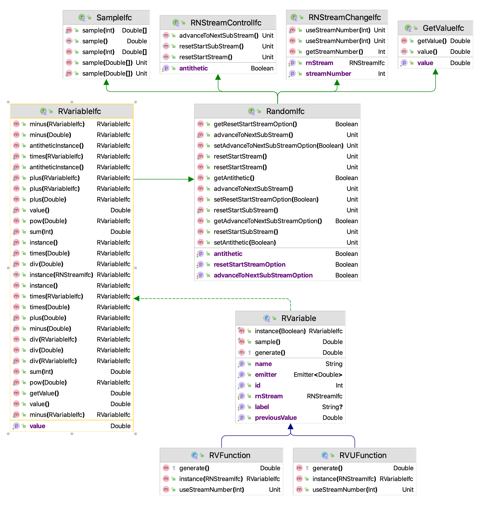
The names and parameters (based on common naming conventions) associated with the continuous random variables are as follows:
BetaRV(alpha1, alpha2)ChiSquaredRV(degreesOfFreedom)ExponentialRV(mean)GammaRV(shape, scale)GeneralizedBetaRV(alpha1, alpha2, min, max)JohnsonBRV(alpha1, alpha2, min, max)LaplaceRV(mean scale)LogLogisticRV(shape, scale)LognormalRV(mean, variance)NormalRV(mean, variance)PearsonType5RV(shape, scale)PearsonType6RV(alpha1, alpha2, beta)StudentTRV(degreesOfFreedom)TriangularRV(min, mode, max)UniformRV(min, max)WeibullRV(shape, scale)
Note
Be careful to note that the normal and lognormal random variables are specified with the mean and the variance (not the standard deviation). Because Kotlin has named parameters, a recommended good practice is to use the parameter names when creating the object instances. This reduces the chances that you have confused the parameters.
The names of the discrete random variables are as follows:
BernoulliRV(probOfSuccess)BinomialRV(pSucces, numTrials)ConstantRV(constVal)a degenerate probability mass on a single value that cannot be changedDEmpiricalRV(values, cdf)values is an array of numbers and cdf is an array representing the cumulative distribution function over the valuesDUniformRV(min, max)GeometricRV(probOfSucces)with range is 0 to infinityNegativeBinomialRV(probOfSuccess, numSuccess)with range is 0 to infinity. The number of failures before the \(r^{th}\) success.PoissonRV(mean)ShiftedGeometricRV(probOfSucces)range is 1 to infinityVConstantRV(constVal)a degenerate probability mass on a single value that can be changed
All classes that represent random variables also have optional parameters to specify the stream number and the random number stream provider. As noted for the NormalRV constructor, we see that the third parameter, called streamNum, is used to specify the random number stream. The default stream provider is the provider associated with KSLRandom.
class NormalRV @JvmOverloads constructor(
val mean: Double = 0.0,
val variance: Double = 1.0,
streamNum: Int = 0,
streamProvider: RNStreamProviderIfc = KSLRandom.DefaultRNStreamProvider,
name: String? = null
) : ParameterizedRV(streamNum, streamProvider, name) If the stream number is not provided (i.e. the default of 0), then the next stream from the default provider is allocated to the new instance of the random variable. Thus, unless the programming specifically assigns streams, all random variables are automatically constructed such that they use different underlying streams.
As you can see, the name of the distribution followed by the letters RV designate the class names. Implementations of these classes extend the RVarable class, which implements the RVariableIfc interface. Users simply create an instance of the class and then use it to get a sequence of values that have the named probability distribution. In order to implement a new random variable (i.e. some random variable that is not already implemented) you can extend the class RVariable. This provides a basic template for what is expected in the implementation. However, it implies that you need to implement all of the required interfaces. The key method to implement is the protected generate() method, which should return the generated random value according to some algorithm.
In almost all cases, the KSL utilizes the inverse transform algorithm for generating random variates. Thus, there is a one to one mapping of the underlying pseudo-random number and the resulting random variate. Even in the case of distributions that do not have closed form inverse cumulative distribution functions, the KSL utilizes numerical methods to approximate the function whenever feasible. For example, the KSL uses a rational function approximation, see (Cody 1969), to implement the inverse cumulative distribution function for the standard normal distribution. The inversion for the gamma distribution is based on Algorithm AS 91 for inverting the chi-squared distribution and exploiting its relationship with the gamma distribution. The beta distribution also uses numerical methods to compute the cumulative distribution function as well as bi-section search to determine the inverse for the cumulative distribution function.
The KSL implements the BernoulliRV, DUniformRV, GeometricRV, NegativeBinomialRV, and ShiftedGeometricRV classes using the methods described in Chapter 2 of Rossetti (2015). While more efficient methods may be available, the PoissonRV and BinomialRV distributions are implemented by searching the probability mass functions. Both search methods use an approximation to get close to the value of the inverse and then search up or down through the cumulative distribution function. Because of this both distributions use numerically stable methods to compute the cumulative distribution function values. The DEmpiricalRV class also searches through the cumulative distribution function.
The following sections will overview the generation algorithms and provide examples for using some of these distributions.
2.2.3 Creating and Using Random Variables
This section presents how to create and use random variables via KSL constructs. The basic approach is to create an instance of a specific type of random variable and use the instance to generate observations.
Example 2.9 (Generating Normal Random Variates) The following example code illustrates how to create a normal random variable and how to generate values using the value property. It is important to note that the value property will return a newly generated value each time that it is accessed.
fun main() {
// create a normal mean = 20.0, variance = 4.0 random variable,
// using stream number 1
val n = NormalRV(20.0, 4.0, streamNum = 1)
print(String.format("%3s %15s %n", "n", "Values"))
// generate some values
for (i in 1..5) {
// the value property returns a generated value
val x = n.value
print(String.format("%3d %15f %n", i, x))
}
}The resulting output is what you would expect.
n Values
1 17.718732
2 19.056360
3 19.003682
4 21.875759
5 18.466600 Alternatively, the user can use the sample() method to generate an array of values that can be later processed. The SampleIfc interface has the following useful functions:
sample()returns a new valuesample(sampleSize: Int)returns an array of valuessampleInto(values: DoubleArray)fills an array with valuessampleAsRows(sampleSize: Int, nRows: Int = 1)makes a 2-D array with samples in the rowssampleAsColumns(sampleSize: Int, nRows: Int = 1)makes a 2-D array with samples in the columnssampleInto(matrix: Array<DoubleArray>)fills a 2-D array with samples
Note
Notice that the previous examples created the random variable outside of the loop that is used to generate values. This implements the best practice of creating an object once and using it many times. The NormalRV class was used outside of the loop to create the object and then used many times within the loop to get new random variates. It may not be an error to create random variables within loops, but it is generally bad practice and inefficient in terms of object creation. If you see yourself creating many instances of an object and then using it only one time before it is discarded, you should reconsider what you are doing.
The following code illustrates how to use the sample() function with a triangular distribution.
Example 2.10 (Using the sample() function) The following example code illustrates how to create a triangular random variable and how to generate values using the sample() function.
fun main() {
// create a triangular random variable with min = 2.0, mode = 5.0, max = 10.0
val t = TriangularRV(2.0, 5.0, 10.0, streamNum = 1)
// sample 5 values
val sample = t.sample(5)
print(String.format("%3s %15s %n", "n", "Values"))
for (i in sample.indices) {
print(String.format("%3d %15f %n", i + 1, sample[i]))
}
}Again, the output is what we would expect.
n Values
1 3.745929
2 4.764898
3 4.724053
4 7.360658
5 4.306321
Note
The SampleIfc interface provides functionality to generate arrays of observations. The KSL provides extensive functionality for working with arrays within its utilities. This functionality is briefly discussed in Section E.7 of Appendix E.
It is important to note that the full range of functionality related to stream control is also available for random variables. That is, the underlying stream can be reset to its start, can be advanced to the next substream, can generate antithetic variates, etc. By default, if a random variable is created without specifying a stream number, the new instance of the random variable is supplied with its own unique stream. Since the underlying random number generator has an enormous number of streams, approximately \(1.8 \times 10^{19}\), it is very unlikely that the user will create so many streams as to start reusing them. However, the streams that are used by random variable instances can be supplied directly so that they may be shared by specifying a stream number.
Example 2.11 (Specifying a Stream) The following code example illustrates how to assign a specific stream by passing a specific stream number into the constructor of the random variable.
fun main() {
// create a normal mean = 20.0, variance = 4.0, with the stream
val n = NormalRV(20.0, 4.0, streamNum = 3)
print(String.format("%3s %15s %n", "n", "Values"))
for (i in 1..5) {
// value property returns generated values
val x = n.value
print(String.format("%3d %15f %n", i, x))
}
}Within the underlying code, the previous example uses the default provider of the KSLRandom class to get stream 3 when constructing the instance of the normal random variable.
A discrete empirical random variable requires the specification of the values and their probabilities. This requires a little more setup. The user must supply the set of values that can be generated as well as an array holding the cumulative distribution probability across the values. The following code illustrates how to do this.
Example 2.12 (Using a DEmpirical Random Variable) The values are provided via an array and the probabilities must be specified in the form of the cumulative probabilities, such that the last element is 1.0.
fun main() {
// values is the set of possible values
val values = doubleArrayOf(1.0, 2.0, 3.0, 4.0)
// cdf is the cumulative distribution function over the values
val cdf = doubleArrayOf(1.0 / 6.0, 3.0 / 6.0, 5.0 / 6.0, 1.0)
//create a discrete empirical random variable
val n1 = DEmpiricalRV(values, cdf, streamNum = 1)
println(n1)
print(String.format("%3s %15s %n", "n", "Values"))
for (i in 1..5) {
print(String.format("%3d %15f %n", i, n1.value))
}
println()
println(n1.probabilityPoints)
}The results are as follows:
DEmpiricalRV(values=[1.0, 2.0, 3.0, 4.0], cdf=[0.16666666666666666, 0.5, 0.8333333333333334, 1.0])
n Values
1 1.000000
2 2.000000
3 2.000000
4 3.000000
5 2.000000 Section A.2.4 of Appendix A defines mixture and truncated distributions. The following provides examples of how to create and use random variables from these distributions. The examples follow those presented in Section A.2.4.
Example 2.13 (Mixture Distribution) Suppose the time that it takes to pay with a credit card, \(X_{1}\), is exponentially distributed with a mean of \(1.5\) minutes and the time that it takes to pay with cash, \(X_{2}\), is exponentially distributed with a mean of \(1.1\) minutes. In addition, suppose that the chance that a person pays with credit is 70%. Then, the overall distribution representing the payment service time, \(X\), has an hyper-exponential distribution with parameters \(\omega_{1} = 0.7\), \(\omega_{2} = 0.3\), \(\lambda_{1} = 1/1.5\), and \(\lambda_{2} = 1/1.1\). Generate 5 random variates from this distribution.
fun main() {
// rvs is the list of random variables for the mixture
val rvs = listOf(ExponentialRV(1.5), ExponentialRV(1.1))
// cdf is the cumulative distribution function over the random variables
val cdf = doubleArrayOf(0.7, 1.0)
//create a mixture random variable
val he = MixtureRV(rvs, cdf, streamNum = 1)
print(String.format("%3s %15s %n", "n", "Values"))
for (i in 1..5) {
print(String.format("%3d %15f %n", i, he.value))
}
} n Values
1 0.575249
2 2.621730
3 1.143410
4 0.659060
5 2.114972 The MixtureRV class requires a list of random variables and a specification of the probability associated with each random variable in the form of a cumulative distribution function. In the provided code sample, a list is created holding the two exponential random variables. Since the distribution associated with the credit card payment is first in the list, the probability of 0.7 is specified first in the cdf array.
The next example illustrates how to generate from a truncated distribution. A truncated distribution is a distribution derived from another distribution for which the range of the random variable is restricted. Suppose we have a random variable, \(X\) with PDF, \(f(x)\) and CDF \(F(x)\). Suppose that we want to constrain \(f(x)\) over interval \([a, b]\), where \(a<b\) and the interval \([a, b]\) is a subset of the original support of \(f(x)\). Note that it is possible that \(a = -\infty\) or \(b = +\infty\). This leads to a random variable from a truncated distribution \(F^{*}(x)\) having CDF:
\[ F^{*}(x) = \begin{cases} 0 & \text{if} \; x < a \\ \frac{F(x) - F(a)}{F(b) - F(a)} & a \leq x \leq b\\ 0 & \text{if} \; b < x\\ \end{cases} \]
This leads to a straight forward algorithm for generating from \(F^{*}(x)\) as follows:
1. Generate \(u \sim U(0,1)\)
2. \(W = F(a) + (F(b) - F(a))u\)
3. \(X = F^{-1}(W)\)
4. return \(X\)
2. \(W = F(a) + (F(b) - F(a))u\)
3. \(X = F^{-1}(W)\)
4. return \(X\)
To implement this algorithm, we need the original CDF \(F(x)\), its range, and the truncated range \([a,b]\).
Example 2.14 (Truncated Distribution) Suppose \(X\) represents the distance between two cracks in highway. Suppose that \(X\) has an exponential distribution with a mean of 10 meters. Generate 5 random distance values restricted between 3 and 6 meters.
fun main() {
val cdf = Exponential(mean = 10.0)
val rv = TruncatedRV(cdf, Interval(0.0, Double.POSITIVE_INFINITY),
Interval(3.0, 6.0), streamNum = 1)
print(String.format("%3s %15s %n", "n", "Values"))
for (i in 1..5) {
print(String.format("%3d %15f %n", i, rv.value))
}
}Note that the first line defines a distribution and not a random variable. The exponential distribution has range \([0,+\infty]\). In this situation, we are truncating the distribution over the range \([a=3, b=6]\). The TruncatedRV class implements the aforementioned algorithm. The class requires an invertible CDF, the original range of the CDF, and the truncated range. In the code, an instance of an exponential distribution (see Section 2.3) is created to provide the cumulative distribution function, \(F(x)\). This allows the implementation to compute \(F(a)\) and \(F(b)\). Then, instances of the Interval class are used to define the original range and the truncated range. As we can see from the following results, the values are limited to the range of \([3,6]\).
n Values
1 3.334730
2 3.861643
3 3.835288
4 5.408551
5 3.591583 Appendix A also defines a shifted random variable. Suppose \(X\) has a given distribution \(f(x)\), then the distribution of \(X + \delta\) is termed the shifted distribution and is specified by \(g(x)=f(x - \delta)\). It is easy to generate from a shifted distribution, simply generate \(X\) according to \(F(x)\) and then add \(\delta\). The KSL implements this idea via the ShiftedRV class. The following example from Appendix A illustrates how simple it is to use a shifted random variable.
Example 2.15 (Shifted Random Variable) Suppose \(X\) represents the time to setup a machine for production. From past time studies, we know that it cannot take any less than 5.5 minutes to prepare for the setup and that the time after the 5.5 minutes is random with a Weibull distribution with shape parameter \(\alpha = 3\) and scale parameter \(\beta = 5\). Generate 5 random observations of the setup time.
fun main() {
val w = WeibullRV(shape = 3.0, scale = 5.0)
val rv = ShiftedRV(5.0, w, streamNum = 1)
print(String.format("%3s %15s %n", "n", "Values"))
for (i in 1..5) {
print(String.format("%3d %15f %n", i, rv.value))
}
}Notice that the ShiftedRV class requires the shift parameter and the random variable that is to be shifted.
This next example is a bit more complex. Recall from Appendix A that the acceptance/rejection algorithm is a general purpose method for generating from any probability distribution, \(f(x)\). The method requires a majorizing function, \(g(x)\), such that \(g(x) \geq f(x)\) for \(-\infty < x < +\infty\). From the majorizing function, we compute its area:
\[ c = \int\limits_{-\infty}^{+\infty} g(x) dx \]
We then define \(c\) as the majorizing constant. Using the majorizing constant and majorizing function, we can define a proposal distribution, \(w(x)\), where \(w(x)\) is defined as \(w(x) = g(x)/c\). To summarize, the acceptance/rejection algorithm requires three things:
- \(f(x)\) The PDF from which random variates need to be generated.
- \(w(x)\) The proposal distribution to generate possible variates for acceptance or rejection.
- \(c\) The majorizing constant (or area under the majorizing function) to be used in the acceptance/rejection test.
The AcceptanceRejectionRV class implements the acceptance/rejection algorithm given these three components. Let’s explore these concepts via an example.
Example 2.16 (Acceptance-Rejection Random Variable) Consider the following PDF over the range \(\left[-1,1\right]\). Generate 1000 random variates from this distribution. \[ f(x) = \begin{cases} \frac{3}{4}\left( 1 - x^2 \right) & -1 \leq x \leq 1\\ 0 & \text{otherwise}\\ \end{cases} \]

As discussed in Example A.8 of Appendix A, we can use \(g(x) = 3/4\) as the majorizing function, which results in \(c=3/2\), and \(w(x)\)
\[
w(x) =
\begin{cases}
\frac{1}{2} & -1 \leq x \leq 1\\
0 & \text{otherwise}\\
\end{cases}
\] Notice that, \(w(x)\) results in random variables, \(W\), where \(W \sim U(-1,1)\). Thus, the proposal distribution is simply a uniform distribution over the range from -1 to 1. The following KSL code implements these concepts. The proposal distribution, \(w(x)\) is provided via an instance of the Uniform distribution class. Probability distributions are discussed in Section 2.3. The AcceptanceRejection class then is created and used to generate 1000 observations.
fun main() {
// proposal distribution
val wx = Uniform(-1.0, 1.0)
// majorizing constant, if g(x) is majorizing function, then g(x) = w(x)*c
val c = 3.0 / 2.0
val rv = AcceptanceRejectionRV(wx, c, fOfx, streamNum = 1)
val h = Histogram.create(-1.0, 1.0, 100)
for (i in 1..1000) {
h.collect(rv.value)
}
println(h)
val hp = h.histogramPlot()
hp.showInBrowser()
val dp = DensityPlot(h) { x -> fOfx.pdf(x) }
dp.showInBrowser()
}
object fOfx : PDFIfc {
override fun pdf(x: Double): Double {
if ((x < -1.0) || (x > 1))
return 0.0
return (0.75 * (1.0 - x * x))
}
override fun domain(): Interval {
return Interval(-1.0, 1.0)
}
}Notice that the implementation requires an implementation of the PDF from which random variates are to be generated, \(f(x)\). The fOfx object is used to implement the function and its domain. The code also illustrates how to create a histogram of the observations. Histograms are discussed further in Section 3.1.2 of Chapter 3.
In what follows, we briefly describe some additional functionality of the KSL for generating random variates and for applying randomness to arrays and lists.
The preferred method for generating random values from random variables is to create an instance of the appropriate random variable class; however, the KSL also provides a set of functions for generating random values within the KSLRandom object. For all the previously listed random variables, there is a corresponding function that will generate a random value. For example, the function rNormal() of the KSLRandom object will generate a normally distributed value. Each function is named with an "r" in front of the distribution name. By using an import of KSLRandom functions the user can more conveniently call these methods. The following code example illustrates how to do this.
Example 2.17 (Using KSLRandom Functions) The functions require the specification of the parameters of the distribution for each invocation.
fun main() {
val v = rUniform(10.0, 15.0) // generate a U(10, 15) value
val x = rNormal(5.0, 2.0) // generate a Normal(mu=5.0, var= 2.0) value
val n = rPoisson(4.0).toDouble() //generate from a Poisson(mu=4.0) value
print(String.format("v = %f, x = %f, n = %f %n", v, x, n))
}In addition to random values through these functions, the KSLRandom object provides a set of methods for randomly selecting from arrays and lists and for creating permutations of arrays and lists. In addition, there is a set of methods for sampling from arrays and lists without replacement. The following code provides examples of using these methods.
Example 2.18 (Random Lists) The randomlySelect() function can be used to randomly select, with equal probability from a Kotlin list. An extension function has been defined to allow this to be done directly from the list.
fun main() {
// create a list
val strings = listOf("A", "B", "C", "D")
// randomly pick from the list, with equal probability
for (i in 1..5) {
println(KSLRandom.randomlySelect(strings))
}
println()
// use the extension function
for (i in 1..5) {
println(strings.randomlySelect())
}
}It is also possible to specify a distribution in the form of a CDF array over the items in the list to permit sampling that is not equally likely. There are also extension functions declared on arrays for directly performing this form of random selection.
This next example illustrates how to define a population of values via the DPopulation class and to use it to perform sampling operations such as random samples and permutations. Similar functionality is also demonstrated by directly using the functions of the KSLRandom object
Example 2.19 (Random Permuation) This example defines a population over the integer from 1 to 10 and permutes the population. It also illustrates how to sample from the population and permute a mutable list.
fun main() {
// create an array to hold a population of values
val y = DoubleArray(10)
for (i in 0..9) {
y[i] = (i + 1).toDouble()
}
// create the population
val p = DPopulation(y, streamNum = 1)
println(p.contentToString())
println("Print the permuted population")
// permute the population
p.permute()
println(p.contentToString())
// directly permute the array using KSLRandom
println("Permuting y")
KSLRandom.permute(y)
println(y.contentToString())
// sample from the population
val x = p.sample(5)
println("Sampling 5 from the population")
println(x.contentToString())
// create a string list and permute it
val strList: MutableList<String> = ArrayList()
strList.add("a")
strList.add("b")
strList.add("c")
strList.add("d")
println("The mutable list")
println(strList)
KSLRandom.permute(strList)
println("The permuted list")
println(strList)
println("Permute using extension function")
strList.permute()
println(strList)
}Output from the permutation examples.
[1.0, 2.0, 3.0, 4.0, 5.0, 6.0, 7.0, 8.0, 9.0, 10.0]
Print the permuted population
[2.0, 4.0, 5.0, 9.0, 6.0, 8.0, 3.0, 1.0, 7.0, 10.0]
Permuting y
[6.0, 5.0, 2.0, 3.0, 8.0, 10.0, 4.0, 7.0, 1.0, 9.0]
Sampling 5 from the population
[1.0, 4.0, 2.0, 5.0, 3.0]
The mutable list
[a, b, c, d]
The permuted list
[a, c, b, d]
Permute using extension function
[d, a, c, b]2.2.4 Functions of Random Variables
The KSL also contains an algebra for working with random variables. A well-known property of random variables is that a function of a random variable is also a random variable. That is, let \(f(\cdot)\) be an arbitrary function and let \(X\) be a random variable. Then, the quantity \(Y = f(X)\) is also a random variable. Various properties of \(Y\) such as expectation, \(E[Y]\) and \(Var[Y]\) may be of interest. A classic example of this is the relationship between the normal random variable and the lognormal random variable. If \(X \sim N(\mu, \sigma^2)\) then the random variable \(Y=e^X\) will be lognormally distributed \(LN(\mu_l,\sigma_{l}^{2})\), where
\[ E[Y] = \mu_l = e^{\mu + \sigma^{2}/2} \]
\[ Var[Y] = \sigma_{l}^{2} = e^{2\mu + \sigma^{2}}\left(e^{\sigma^{2}} - 1\right) \]
Thus, one can define new random variables simply as functions of other random variables.
The interface RVariableIfc and base class RVariable provides the ability to construct new random variables that are functions of other random variables by overriding the \((+, -, \times, \div)\) operators and providing extension functions for various math functions. For example, we can defined two random variables and then a third that is the sum of the first two random variables. The random variable that is defined as the sum will generate random variates that represent the sum. Functions, such as sin(), cos() as well as many other standard math functions can be applied to random variables to create new random variables. That is, the KSL provides the ability to create arbitrarily complex random variables that are defined as functions of other random variables. This capability will be illustrated in this section with a couple of examples.
Example 2.20 (Erlang Via Convolution) Suppose we have \(k\) independent random variables, \(X_i\) each exponentially distributed with mean \(\theta\). Then, the random variable: \[ Y = \sum_{i=i}^{k}X_i \] will be an Erlang\((k, \theta)\) where \(k\) is the shape parameter and \(\theta\) is the scale parameter. Set up a KSL model to generate 1000 Erlang random variables with \(k = 5\) and \(\theta = 10\).
A possible solution to this problem is to use the KSL to define a new random variable that is the sum of 5 exponential random variables.
fun main(){
var erlang: RVariableIfc = ExponentialRV(10.0, streamNum = 1)
for(i in 1..4) {
erlang = erlang + ExponentialRV(10.0)
}
println("stream number = ${erlang.streamNumber}")
val sample = erlang.sample(1000)
val stats = Statistic(sample)
println()
print(stats)
sample.writeToFile("erlang.txt")
}The first line of this code creates and stores an instance of an exponential random variable with mean 10. The for loop is not generating any random variates. It is defining a new random variable that is the sum of 4 additional exponential random variables. The defined random variable is used to generate a sample of size 1000 and using the Statistic class (discussed in the next chapter) a basic statistical summary is computed. Also, using the writeToFile KSL extension function for double arrays, the sample is written to a file. The results as a histogram are also presented. The statistical results are as follows.
stream number = 1
ID 31
Name Statistic_1
Number 1000.0
Average 50.22504832196012
Standard Deviation 22.130436282067713
Standard Error 0.699825842645625
Half-width 1.3732971036698247
Confidence Level 0.95
Confidence Interval [48.85175121829029, 51.598345425629944]
Minimum 8.517383088139447
Maximum 147.81714627300153
Sum 50225.048321960116
Variance 489.75621003465903
Deviation Sum of Squares 489266.45382462436
Last value collected 32.293283161673294
Kurtosis 0.9888978451474602
Skewness 0.8816305761311749
Lag 1 Covariance -19.73716912800237
Lag 1 Correlation -0.040340327798310656
Von Neumann Lag 1 Test Statistic -1.2518042413131365
Number of missing observations 0.0
Lead-Digit Rule(1) -1Notice that the histogram looks like an Erlang distribution and the estimated results are what we would expect for an Erlang distribution with \(k=5\) and \(\theta = 10\).
To illustrate a couple of other examples consider the following code. In this code, the previously noted relationship between normal random variables and lognormal random variables is demonstrated in the first 6 lines of the code.
Example 2.21 (Functions of Random Variables) This example uses the fact that if \(X \sim N(\mu,\sigma^2)\), then \(Y = e^{X} \sim \text{LN}(\mu_l,\sigma_{l}^{2})\). In addition, the code illustrates how to generate a beta random variable via its relationship with gamma random variables. The assignment of streams is a bit more complex for functions of random variables. Notice that in the following code, the random variable (normal in the first case) is assigned stream number 1. This stream is then used by all of the transformations. In the example of generating a beta random variable, the first random variable, y1 has stream 2. The random variable y2 has the next stream number (3); however, because the denominator has y1 + y2 and y1 appears first in the functional transformation, the resulting random variable y1 + y2 will have stream 2. Then, when y1 is divided by y1 + y2, the resulting random variable betaRV will use stream 2. Thus, the order of operation is important in the determination of the resulting assigned stream.
fun main(){
// define a lognormal random variable, y
val x = NormalRV(2.0, 5.0, streamNum = 1)
val y = exp(x)
// generate from y
println("stream number = ${y.streamNumber}")
val ySample = y.sample(1000)
println(ySample.statistics())
// define a beta random variable in terms of gamma
val alpha1 = 2.0
val alpha2 = 5.0
val y1 = GammaRV(alpha1, 1.0, streamNum = 2)
val y2 = GammaRV(alpha2, 1.0)
val betaRV = y1/(y1+y2)
val betaSample = betaRV.sample(500)
println("stream number = ${betaRV.streamNumber}")
println(betaSample.statistics())
}One method for generating Beta random variables exploits its relationship with the Gamma distribution. If \(Y_1 \sim Gamma(\alpha_1, 1)\) and \(Y_2 \sim Gamma(\alpha_2, 1)\), then \(X = Y_1/(Y_1 + Y_2)\) has a Beta(\(\alpha_1, \alpha_2\)) distribution. In the previous KSL code, we defined two gamma random variables and define the beta random variable using the algebraic expression. This code defines and constructs a new random variable that is function of the previously defined random variables. Through this pattern you can define complex random variables and use those random variables anywhere that a random variable is needed.
2.3 Probability Distribution Models
The ksl.utilities.random.rvariable package is the key package for generating random variables; however, it does not facilitate performing calculations involving the underlying probability distributions. To perform calculations involving probability distributions, you should use the ksl.utilities.distributions package. This package has almost all the same distributions represented within the ksl.utilities.random.rvariable package.
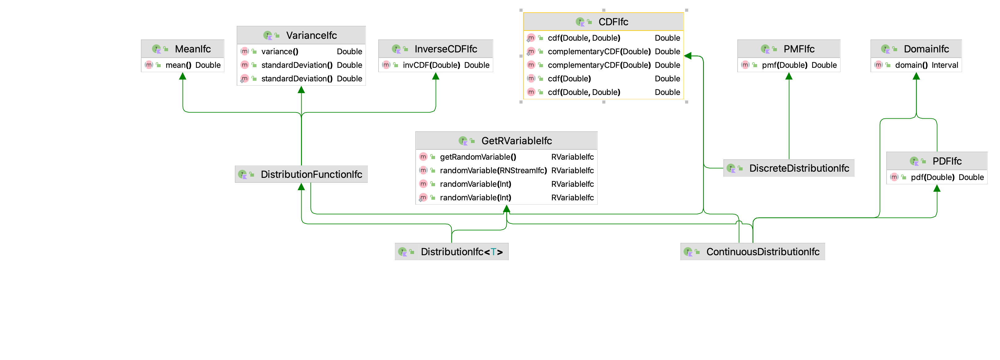
Figure 2.6 illustrates the interfaces used to define probability distributions. First, the interface, CDFIfc serves as the basis for discrete distributions via the DiscreteDistributionIfc interface, for continuous distributions via the ContinuousDistributionIfc interface and the general DistributionIfc interface. The discrete distributions such as the geometric, binomial, etc. implement the DiscreteDistributionIfc and PMFIfc interfaces. Similarly, continuous distributions like the normal, uniform, etc. implement the ContinuousDistributionIfc and PDFIfc interfaces. All concrete implementations of distributions extend from the abstract Distribution class, which implements the DistributionIfc interface. Thus, all distributions have the following capabilities:
cdf(b: Double)- computes the cumulative probability, \(F(b) = P(X \leq b)\)cdf(a: Double, b: Double)- computes the cumulative probability, \(P( a \leq X \leq b)\)complementaryCDF(b: Double)- computes the cumulative probability, \(1-F(b) = P(X > b)\)mean()- returns the expected value (mean) of the distributionvariance()- returns the variance of the distributionstandardDeviation()- returns the standard deviation of the distributioninvCDF(p: Double)- returns the inverse of the cumulative distribution function \(F^{-1}(p)\). This is performed by numerical search if necessary
Discrete distributions have a method called pmf(k: Double) that returns the probability associated with the value \(k\). Continuous distributions have a probability density function, \(f(x)\), implemented in the method, pdf(x : Double). Finally, all distributions know how to create random variables through the GetRVariableIfc interface that provides the following methods.
RVariableIfc randomVariable(stream: RNStreamIfc)- returns a new instance of a random variable based on the current values of the distribution’s parameters that uses the supplied streamRVariableIfc randomVariable(streamNum: Int)- returns a new instance of a random variable based on the current values of the distribution’s parameters that uses the supplied stream numberRVariableIfc randomVariable()- returns a new instance of a random variable based on the current values of the distribution’s parameters that uses a newly created stream
As an example, the following code illustrates some calculations for the binomial distribution.
Example 2.22 (Computing with a Binomial Distribution) This example code illustrates how to create a binomial distribution and to use some of its functions to compute the mean, variance, and perform some basic calculations involving probabilities. Notice that the parameters of a distribution can be changes and that distributions can create random variables for generating variates.
fun main() {
// make and use a Binomial(p, n) distribution
val n = 10
val p = 0.8
println("n = $n")
println("p = $p")
val bnDF = Binomial(p, n)
println("mean = " + bnDF.mean())
println("variance = " + bnDF.variance())
// compute some values
print(String.format("%3s %15s %15s %n", "k", "p(k)", "cdf(k)"))
for (i in 0..10) {
print(String.format("%3d %15.10f %15.10f %n", i, bnDF.pmf(i), bnDF.cdf(i)))
}
println()
// change the probability and number of trials
bnDF.probOfSuccess = 0.5
bnDF.numTrials = 20
println("mean = " + bnDF.mean())
println("variance = " + bnDF.variance())
// make random variables based on the distributions
val brv = bnDF.randomVariable(1)
print(String.format("%3s %15s %n", "n", "Values"))
// generate some values
for (i in 1..5) {
// value property returns generated values
val x = brv.value.toInt()
print(String.format("%3d %15d %n", i, x))
}
}The output shows the mean, variance, and basic probability calculations.
n = 10
p = 0.8
mean = 8.0
variance = 1.5999999999999996
k p(k) cdf(k)
0 0.0000001024 0.0000001024
1 0.0000040960 0.0000041984
2 0.0000737280 0.0000779264
3 0.0007864320 0.0008643584
4 0.0055050240 0.0063693824
5 0.0264241152 0.0327934976
6 0.0880803840 0.1208738816
7 0.2013265920 0.3222004736
8 0.3019898880 0.6241903616
9 0.2684354560 0.8926258176
10 0.1073741824 1.0000000000 The ksl.utilities.random.rvariable package creates instances of random variables that are immutable. That is, once you create a random variable, its parameters cannot be changed. However, distributions permit their parameters to be changed and they also facilitate the creation of random variables. The example code uses the properties probOfSuccess and numTrials to change the parameters of the previously created binomial distribution and then creates a random variable based on the mutated distribution.
mean = 10.0
variance = 5.0
n Values
1 7
2 9
3 9
4 12
5 8 The results are as we would expect. Similar calculations can be made for continuous distributions. In most cases, the concrete implementations of the various distributions have specialized methods beyond those generic methods described here. Please refer to the documentation for further details.
There are a number of useful companion object methods defined for the binomial, normal, gamma, and Student-T distributions. Specifically, for the binomial distribution, has the following methods
binomialPMF(j: Int, n: Int, p: Double)- directly computes the probability for the value \(j\)binomialCDF(j: Int, n: Int, p: Double)- directly computes the cumulative distribution function for the value \(j\)binomialCCDF(j: Int, n: Int, p: Double)- directly computes the complementary cumulative distribution function for the value of \(j\)binomialInvCDF(x: Double, n: Int, p: Double)- directly computes the inverse cumulative distribution function
These methods are designed to perform their calculations in a numerically stable manner to ensure numerical accuracy. The normal distribution has the following companion object methods for computations involving the standard normal distribution.
stdNormalCDF(z: Double)- the cumulative probability for a \(Z ~ N(0,1)\) random variable, i.e. \(F(z) = P(Z \leq z)\)stdNormalComplementaryCDF(z: Double)- returns \(1-P(Z \leq z)\)stdNormalInvCDF(p: Double)- returns \(z = F^{-1}(p)\) the inverse of the cumulative distribution function
The Student-T distribution also has two convenience methods to facilitate computations.
cdf(dof: Double, x: Double)- computes the cumulative distribution function for \(x\) given the degrees of freedominvCDF(dof: Double, p: Double)- computes the inverse cumulative distribution function or t-value for the supplied probability given the degrees of freedom.
Within the Gamma class’s companion object there are some convenience methods for computing the gamma function, the natural logarithm of the gamma function, the incomplete gamma function, and the digamma function (derivative of the natural logarithm of the gamma function).
2.4 Distribution Fitting Using the KSL
This section describes how to apply the methods discussed in Appendix B to fit probability distributions using the KSL. The package ksl.utilities.distributions.fitting contains classes that facilitate the estimation of the parameters of discrete and continuous probability distributions. In addition, the quality of the estimated parameters can be examined based on a number of metrics that measure the goodness of fit of the probability model to the data. Finally, there is functionality that will automatically fit a set of possible distributions to a data set and recommend the best distribution based on a combination of metrics. This section will first describe the organization of the functionality related to parameter estimation. Then, the scoring models for measuring the quality of fit will be presented. Finally, a number of examples will illustrate the use of the classes on the data from the examples discussed in Appendix B.
2.4.1 Estimating Distribution Parameters
As discussed in Appendix B a key step in the distribution fitting process is estimating the parameters of the hypothesized probability model. For example, if we want to fit a normal distribution to the data, we must estimate the mean (\(\mu\)) and the variance (\(\sigma^2\)) of the associated distribution. Each distribution may be specified by different parameters. For example, the gamma distribution is specified by the shape (\(\alpha\)) and scale (\(\beta\)) parameters. Section D.1 and Section D.2 provide a listing of many common distributions and their parameters.
The estimation of the parameters of a distribution requires the execution of an algorithm. As mentioned in Appendix B, the maximum likelihood estimation method is commonly used because it often produces estimates that have desirable statistical properties. However, the maximum likelihood method may require the solving of a non-linear optimization problem. The method of moments is also a common algorithm that is used to estimate the parameters of various distributions. In the method of moments, the theoretical moment equations are matched with the statistically computed moments resulting in a set of equations that must be solved to form the parameter estimators. In some cases, the method of moments results in simple equations, but for some distributions it may result in the need to solve a system of non-linear equations. Many other methods of parameter estimation exist, such as the percentile method, which may be general or targeted to specific distributions. The KSL facilitates the development of routines to estimate parameters by providing a well-defined parameter estimation interface. By implementing the ParameterEstimatorIfc interface, KSL users can incorporate additional distributions and estimation methods into the estimation framework.
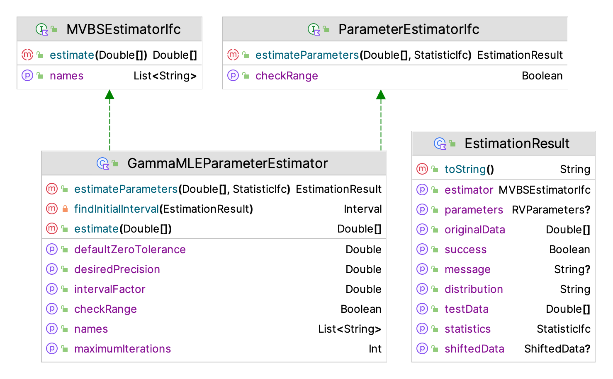
Figure 2.7 illustrates some of the key classes and interfaces involved in the parameter estimation framework. The functionality starts with the ParameterEstimatorIfc interface, which requires the implementation of the estimation routine and a property (checkRange) to indicate if the data should be checked for shifting onto the domain of the distribution. The ParameterEstimatorIfc interface defines a general function that uses a 1-dimensional data array, and estimates the parameters of an hypothesized uni-variate distribution via some estimation algorithm. It is important to note that a distribution may have more than one method for estimating its parameters. In the figure, the maximum likelihood estimator for the gamma distribution is illustrated; however, for example, there is also a method of moments estimator for the gamma distribution implemented within the KSL distribution fitting framework.
interface ParameterEstimatorIfc {
/**
* Indicates if the estimator requires that the range of the data be checked for a shift
* before the estimation process.
*/
val checkRange: Boolean
/**
* Estimates the parameters associated with some distribution. The returned [EstimationResult]
* needs to be consistent with the intent of the desired distribution.
* Note the meaning of the fields associated with [EstimationResult]
*/
fun estimateParameters(data: DoubleArray, statistics: StatisticIfc = Statistic(data)): EstimationResult
}The basic contract for the estimation process is that the returned EstimationResult is consistent with the required parameter estimation. The data class EstimationResult stores information about the estimation process to be returned as a result of its application on the supplied data. The key property is the success property, which indicates whether the parameter estimation process was successful. Given that many estimation processes may require advanced optimization methods, the estimation process might not converge or some other problem might have occurred. If the success property is true, then the results should be meaningful. The EstimationResult also returns the estimator that was used (MVBSestimatorIfc) in a form that can be used within KSL bootstrapping constructs, the estimated parameters as an instance of RVParameters, a message concerning the estimation process, a text (string) representation of the distribution and its parameters, the original data (originalData), the shifted data if shifted, the statistics associated with the original data, and data that is suitable for testing for goodness of fit (testData). The MVBSestimatorIfc interface defines a method that takes in an array of data and produces a (double) array that holds the estimated parameters. In addition, the interface defines a list of the names to use for the parameters. This form for the estimation results facilitates performing a bootstrapping process that can provide confidence intervals for the estimated parameters.
Example 2.23 (Parameter Estimation) The following code illustrates the estimation of the parameters for a normal distribution.
fun main(){
// define a normal random variable,
val x = NormalRV(2.0, 5.0, streamNum = 1)
// generate some data
val data = x.sample(100)
// create the estimator
val ne = NormalMLEParameterEstimator
// estimate the parameters
val result = ne.estimateParameters(data)
println(result)
val bss = BootstrapSampler(data, ne)
val list = bss.bootStrapEstimates(400)
for (element in list) {
println(element.toString())
}
}The results of this estimation process are show here. Notice that the estimation process was successful and the summary statistics were reported. The data was not shifted for the estimation process and the estimated parameters were \(\mu = 2.4138851463671918\) and \(\sigma^2 = 5.571943618235626\). The bootstrapping process, see Section 9.1 of Chapter 9 was used to provide confidence intervals on the estimated parameters. This functionality is available for any of the distributions and the estimation routines that have been defined within the KSL.
Estimation Results:
The estimation was a SUCCESS!
Estimation message:
The normal parameters were estimated successfully using a MLE technique
Statistics for the data:
ID 4
Name Statistic_1
Number 100.0
Average 2.0892468525989156
Standard Deviation 2.123930458872048
Standard Error 0.2123930458872048
Half-width 0.4214338787318177
Confidence Level 0.95
Confidence Interval [1.667812973867098, 2.5106807313307336]
Minimum -4.430752220590554
Maximum 6.493367339631967
Sum 208.92468525989156
Variance 4.5110805941244285
Deviation Sum of Squares 446.5969788183184
Last value collected 3.5738686354135556
Kurtosis -0.2314557519668217
Skewness -0.2890094690738773
Lag 1 Covariance -0.40973073091033607
Lag 1 Correlation -0.09174507449523522
Von Neumann Lag 1 Test Statistic -0.8229876116312043
Number of missing observations 0.0
Lead-Digit Rule(1) -1
Shift estimation results:
null
Estimated parameters:
RV Type = Normal
Double Parameters {mean=2.0892468525989156, variance=4.5110805941244285}
------------------------------------------------------
Bootstrap statistical results:
------------------------------------------------------
statistic name = mean
number of bootstrap samples = 400
size of original sample = 100
original estimate = 2.0892468525989156
bias estimate = -0.01587415275757076
across bootstrap average = 2.073372699841345
bootstrap std. err. estimate = 0.21341609857688634
default c.i. level = 0.95
norm c.i. = [1.670958985329941, 2.5075347198678903]
basic c.i. = [1.6728521695280434, 2.506080452483194]
percentile c.i. = [1.6724132527146374, 2.505641535669788]
------------------------------------------------------
Bootstrap statistical results:
------------------------------------------------------
statistic name = variance
number of bootstrap samples = 400
size of original sample = 100
original estimate = 4.5110805941244285
bias estimate = -0.013680373758844233
across bootstrap average = 4.497400220365584
bootstrap std. err. estimate = 0.6474490755210855
default c.i. level = 0.95
norm c.i. = [3.2421037232562866, 5.78005746499257]
basic c.i. = [3.163271658068438, 5.717662725018807]
percentile c.i. = [3.3044984632300505, 5.858889530180419]The parameters of the following distributions can be estimated from data using the KSL.
- Beta - via
BetaMOMParameterEstimator - Binomial - via
BinomialMaxParameterEstimatororBinomialMOMParameterEstimator - Exponential - via
ExponentialMLEEstimator - Gamma - via
GammaMLEParameterEstimatororGammaMOMParameterEstimator - Generalized Beta - via
GeneralizedBetaMOMParameterEstimator - Laplace - via
LaplaceMLEParameterEstimator - Logistic - via
LogisticMOMParameterEstimator - Lognormal - via
LognormalMLEParameterEstimator - Negative Binomial - via
NegBinomialMOMParameterEstimator - Normal - via
NormalMLEParameterEstimator - Pearson Type 5 - via
PearsonType5MLEParameterEstimator - Poisson - via
PoissonMLEParameterEstimator - Triangular - via
TriangularParameterEstimator - Uniform - via
UniformParameterEstimator - Weibull - via
WeibullMLEParameterEstimatororWeibullPercentileParameterEstimator
Again, by implementing the concepts illustrated in Figure 2.7, a KSL user can implement additional distribution parameter estimation methods. If you need to fit a distribution that is not modeled within the KSL, then you need to implement the distribution’s parameter estimation procedure. In addition, you will also need to implement a class representing the distribution. Depending on the type of distribution, this may involve implementing the requirements of the ContinuousDistributionIfc interface or the DiscreteDistributionIfc interface for the underlying probability model.
2.4.2 Continuous Distribution Recommendation Framework
As described in Appendix B, the distribution modeling process may require that the parameters of many distributions be estimated and the quality of those probability models examined to recommend an overall distribution. This process normally involves statistical tests or metrics (e.g. square error criterion) to assess how well the probability model represents the data.
Rather than relying on statistical tests, the KSL’s distribution recommendation framework defines a set of criteria for assessing the quality of the probability model’s representation. These criteria are called scoring models. Figure 2.8 illustrates the scoring models that the KSL uses within its automated fitting process. To implement your own scoring model, you need to sub-class from the abstract base class PDFScoringModel.
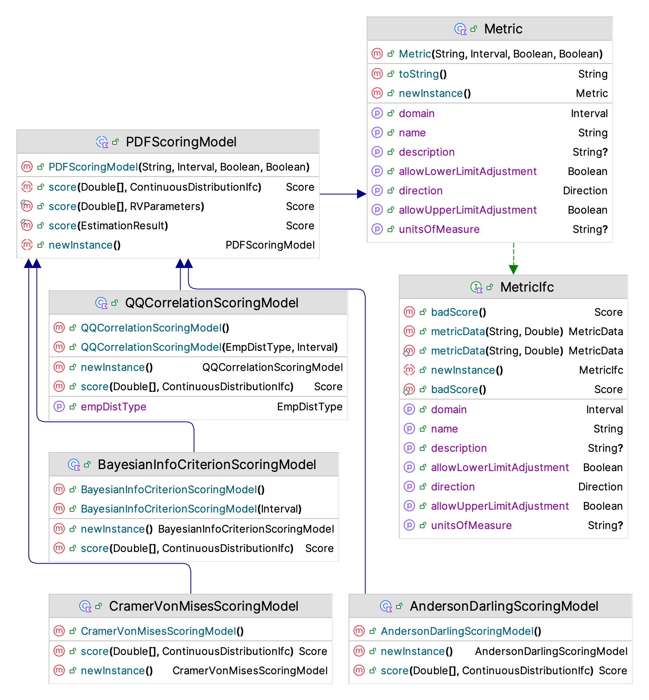
The primary method that needs to be implemented is the abstract score() function.
abstract fun score(data: DoubleArray, cdf: ContinuousDistributionIfc) : ScoreThe contract for this function is that it will return a numerical value that measures the quality of the distribution fit given the observed data and a hypothesized continuous distribution function. In addition, the function, badScore(), should return the worse possible score for the metric. The badScore() function should be used if there is some error or issue that prevents the scoring procedure from determining a score for the fit. A Score is a data class that indicates whether the score is valid or not and provides the metric that determined the score. You can think of the metric as the units of measure. The metric defines the domain (or set of legal values) for the metric and its direction. By direction, we mean whether bigger scores are better than smaller scores or vice versa. This information is used when a set of scores are combined into an overall score.
The KSL has many pre-defined scoring models. The user can specify the criteria to use for the scoring evaluation process or accept the defaults. Two of the scoring models are based on a histogram summary of the data. This involves dividing the range of observations via break points \(b_j\) and tabulating frequencies or proportions of the data falling with the defined intervals or bins. The KSL does not use arbitrary break points from a histogram binning process. Instead the KSL attempts to define the break points for the intervals such that each interval has the same probability of occurrence. This ensures that the expected number of observations within each interval is the same. The theoretical basis for this approach can be found in (Williams 1950).
The scoring criteria based on a binning process are the sum of squared errors (SSE), Chi-Squared (CSQ), and the Mallows L2 (ML2) criterion. For these models, let \(c_{j}\) be the observed count of the \(x\) values contained in the \(j^{th}\) interval \(\left(b_{j-1}, b_{j} \right]\), let \(h_j = c_j/n\) be the relative frequency for the \(j^{th}\) interval, and let \(p_j\) be defined as:
\[ p_j = P\{b_{j-1} \leq X \leq b_{j}\} = \int\limits_{b_{j-1}}^{b_{j}} f(x) \mathrm{d}x \] Thus, we can define SSE, CSQ, and ML2 as follows:
- Sum of Squared Error (SSE) criterion - The squared error is defined as the sum over the intervals of the squared difference between the relative frequency and the theoretical probability associated with each interval:
\[ \text{SSE} = \sum_{j = 1}^k (h_j - p_j)^2 \]
- Chi-Squared criterion (CSQ) - The chi-squared criterion is the \(\chi^{2}\) test statistic value that compares the observed counts \(c_j\) to the expected counts \(np_j\) over the intervals.
\[ \chi^{2}_{0} = \sum\limits_{j=1}^{k} \frac{\left( c_{j} - np_{j} \right)^{2}}{np_{j}} \]
- Mallows L2 Criterion - (Levina and Bickel 2001) provide the definition of the Mallows L2 distance, also known as the earthmovers distance. In terms of \(p_j\) and \(h_j\), this is:
\[ M_{L_2} = \Bigg( \frac{1}{k} \sum_{j=1}^{k}(h_j - p_j)^2\Bigg)^{\frac{1}{2}} \]
Note that under the specification of the breakpoints resulting in intervals with equal probabilities, we have \(p_j = p\) and \(p = k/n\). This allows the SSE criterion to be simplified as follows:
\[ \text{SSE} = \sum_{j = 1}^k (h_j - p_j)^2 = \sum_{j = 1}^k (h_j - p)^2 \]
In addition, the Mallows criterion can be written in terms of the SSE as follows:
\[ M_{L_2} = \Bigg( \frac{1}{k} \sum_{j=1}^{k}(h_j - p_j)^2\Bigg)^{\frac{1}{2}} = \Bigg( \frac{\text{SSE} }{k} \Bigg)^{\frac{1}{2}} \]
Thus, we have \(M^2_{L_2} = \frac{\text{SSE} }{k}\). Finally, notice that the chi-squared criterion (CSQ) under the assumption that \(p_j = p\) can be simplified as:
\[ \chi^{2}_{0} = \sum\limits_{j=1}^{k} \frac{\left( c_{j} - np_{j} \right)^{2}}{np_{j}}= n \sum\limits_{j=1}^{k} \frac{\left( h_{j} - p_{j} \right)^{2}}{p_{j}} = \frac{n}{p}\sum\limits_{j=1}^{k} \left( h_{j} - p \right)^{2} = \frac{n}{p}\text{SSE} \]
Therefore, under the assumption that \(p_j = p\), that is equally probable intervals, we have that:
\[ \chi^{2}_{0} = \frac{n^2}{k}\text{SSE}=n^2M^2_{L_2} \] The relationships between CSQ, SSE, and ML2 are important to note because during the scoring process, the metrics are converted to a common scale. If a linear transformation is chosen for the transformation (which is the default), then the resulting values for CSQ, SSE, and ML2 will be the same in terms of their scaled values. Thus, under a linear transformation, only one of CSQ, SSE, and ML2 should be included in the evaluation process.
The metrics that do not depend on a histogram binning process include the Kolmogorov-Smirnov (KS) criterion, Cramer Von Mises (CVM) criterion, Anderson-Darling (AD) criterion, P-P plot sum of squared errors (PPSSE), P-P plot correlation (PPC), Q-Q plot sum of squared errors (QQSSE), Q-Q plot correlation (QQC), Bayesian Information Criterion (BIC), and the Akaike Information Criterion (AIC). These scoring metrics are defined as follows:
- Kolmogorov-Smirnov criterion - The Kolmogorov-Smirnov (KS) criterion is based on the K-S test statistic, where, \(D_{n} = \max \lbrace D^{+}_{n}, D^{-}_{n} \rbrace\), represents the largest vertical distance between the hypothesized distribution and the empirical distribution over the range of the distribution.
\[ \begin{aligned} D^{+}_{n} & = \underset{1 \leq i \leq n}{\max} \Bigl\lbrace \tilde{F}_{n} \left( x_{(i)} \right) - \hat{F}(x_{(i)}) \Bigr\rbrace \\ & = \underset{1 \leq i \leq n}{\max} \Bigl\lbrace \frac{i}{n} - \hat{F}(x_{(i)}) \Bigr\rbrace \end{aligned} \]
\[ \begin{aligned} D^{-}_{n} & = \underset{1 \leq i \leq n}{\max} \Bigl\lbrace \hat{F}(x_{(i)}) - \tilde{F}_{n} \left( x_{(i-1)} \right) \Bigr\rbrace \\ & = \underset{1 \leq i \leq n}{\max} \Bigl\lbrace \hat{F}(x_{(i)}) - \frac{i-1}{n} \Bigr\rbrace \end{aligned} \]
- Cramer Von Mises criterion (CVM) - The Cramer Von Mises criterion is a distance measure used to compare the goodness of fit of a cumulative distribution function, \(F(x)\) to the empirical distribution, \(F_n(x)\). The distance is defined as:
\[ \omega^2 = \int_{-\infty}^{+\infty}\Big[ F_n(x) - F(x) \Big]^2\,dF(x) \]
The CVM metric can be computed from data sorted in ascending order (\(x_1, x_2, \cdots, x_n\)), i.e. the order statistics, as:
\[ T = n\omega^2 = \frac{1}{12n} + \sum_{i=1}^{n}\Big[ \frac{2i-1}{2n} - F(x_i) \Big]^2 \]
- Anderson Darling criterion (AD) - The Anderson-Darling criterion is similar in spirit to the Cramer Von Mises test statistic except that it is designed to detect discrepancies in the tails of the distribution.
\[ A^2 = n\int_{-\infty}^{+\infty}\frac{\Big[ F_n(x) - F(x) \Big]^2}{F(x)(1-F(x))}\,dF(x) \]
The AD metric can be computed from data sorted in ascending order (\(x_1, x_2, \cdots, x_n\)), i.e. the order statistics, as:
\[ A^2 = -n - \sum_{i=1}^{n}\frac{2i-1}{n}\Big[ \ln(F(x_i)) + \ln(1-F(x_{n+1-i})) \Big] \]
- P-P Plot Sum of Squared Errors (PPSSE) - Based on the concepts found in (Gan and Koehler 1990), the sum of squared error related to the P-P plot of the theoretical distribution versus the empirical distribution was developed as a scoring criterion. Let \((x_{(1)}, x_{(2)}, \ldots x_{(n)})\) be the order statistics. Let the theoretical distribution be represented with \(\hat{F}(x_{(i)})\) for \(i= 1, 2, \ldots n\) where \(\hat{F}\) is the CDF of the hypothesized distribution. Define the empirical distribution as
\[\tilde{F}_n(x_{(i)}) = \dfrac{i - 0.5}{n}\]
Then, the P-P Plot sum of squared error (PPSSE) criterion is defined as:
\[ \text{PP Squared Error} = \sum_{i = 1}^n (\tilde{F}_n(x_{(i)}) - \hat{F}(x_{(i)}))^2 \]
Notice that the Cramer-Von-Mises criterion and the PPSSE criterion are related as follows:
\[ T = \frac{1}{12n} + \text{PPSSE} \]
Therefore, under a linear transformation, it is not recommended to include both PPSSE and CVM in the evaluation process.
P-P Correlation (PPC) - Based on the concepts found in (Gan and Koehler 1990), the P-P correlation scoring model computes the Pearson correlation associated with a P-P plot. That is, the scoring model computes the correlation between \((\tilde{F}_n(x_{(i)}), \hat{F}(x_{(i)}))\) for \(i= 1, 2, \ldots n\).
Q-Q Plot Sum of Squared Error (QQSSE) - Again, based on the concepts found in (Gan and Koehler 1990), the sum of squared error related to the Q-Q plot of the theoretical quantiles versus the empirical quantiles was developed as a scoring criterion. For a Q-Q plot define \(q_i = (i - 0.5)/n\), for \(i= 1, 2, \ldots n\) and \(x_{q_i} = \hat{F}^{-1} (q_i)\) where \(\hat{F}^{-1}(\cdot)\) is the inverse CDF of the hypothesized distribution. Finally, let \((x_{(1}, x_{(2)}, \ldots x_{(n)})\) be the order statistics. Then, the QQSSE is the sum of the squared error as follows:
\[ \text{QQSSE} = \sum_{i = 1}^n (x_{(i)} - x_{q_i})^2 \]
Q-Q Plot Correlation (QQC) - Similar to PPC, the Q-Q plot correlation criterion is the Pearson correlation of \((x_{(i)},x_{q_i})\) for \(i= 1, 2, \ldots n\), with values closer to 1.0 indicating a good fit.
Bayesian Information Criterion (BIC) - Developed by (Schwarz 1978), the BIC is used for model selection where models with lower BIC are preferred. The BIC is based on the log-likelihood function. Let \(f(x;\vec{\theta})\) be the theoretical probability density function with parameters \(\vec{\theta}\). The likelihood function of a sample of \(\vec{x} = (x_1,x_2, \cdots, x_n)\) is:
\[ L(\vec{\theta};\vec{x}) = \prod_{i=1}^{n}f(x_i;\vec{\theta}) \] The likelihood function of the sample, measures the likelihood that the sample came from the distribution with the given parameters. The log-likelihood function for an observation \(x_i\) is \(\ln \big(f(x_i;\vec{\theta}\big)\). Thus, the log-likelihood function for the sample is:
\[ \text{LL}(\vec{\theta};\vec{x}) = \sum_{i=1}^{n}ln(f(x_i;\vec{\theta})) \] The BIC is defined in terms of the value of the log-likelihood of the sample as follows:
\[ \text{BIC} = k\ln(n) - 2\text{LL}(\hat{\vec{\theta}};\vec{x}) \]
where \(n\) is the sample size, \(k\) is the number of parameters estimated for the model, \(\hat{\vec{\theta}}\) are the estimated parameter values.
- Akaike Information Criterion (AIC) - Developed by (Akaike 1974), the AIC is used for model selection where models with lower AIC are preferred. Like the BIC, the AIC is defined in terms of the log-likelihood function of the sample. The KSL uses the formulation described in (Vose 2010) as follows:
\[ \text{AIC} = \Bigg( \frac{n-2k +2}{n-k+1}\Bigg) -2\text{LL}(\hat{\vec{\theta}};\vec{x}) \]
These scoring models avoid summarizing the data based on a histogram, which requires a specification of the bin sizes (or widths) and tabulation of frequencies or proportions associated with the bins.
As illustrated in Figure 2.8, the scoring models are implemented by sub-classing from the PDFScoringModel abstract base class. Users of the KSL distribution recommendation framework can select which scoring models to include during the evaluation process. The default set of scoring models are BIC, AD, CVM, and QQC. During testing, the BIC criterion performed very well across all but very low sample sizes. The AD and CVM criteria tend to perform better for lower sample sizes, while the QQC criterion tends to perform better for higher sample sizes and for particular distribution families.
The quality of a parametric fit for a specific distribution can be evaluated by one or more scoring models. Since distribution quality metrics have been designed to measure different aspects of the fit, the KSL allows the scoring results to be combined into an overall score. Suppose distribution \(F_k\) is evaluated by the the scoring models, each resulting in score \(S_i\) for \(i=1,2,\cdots, m\), where \(m\) is the number of scoring models. In general, the scores may not have the same scales and the same direction of goodness. The KSL scoring system translates and scales each score \(S_i\) in to a value measure, \(M_i\), that has a common scale and direction (a bigger score is better). These value measures are then combined into an overall value (\(V_k\)) for the distribution using weights (\(w_i\)) across the scoring criteria:
\[ V_{k} = \sum_{i=1}^{m}w_i \times M_i \]
The distribution that has the overall largest value, \(V_k\), is then recommended as the best fitting probability model.
This methodology is based on the commonly used multi-objective decision analysis (MODA) method for choosing among a set of alternatives. In the KSL’s default application of this methodology, each scoring model is weighted equally and a linearly additive model is assumed. The framework is designed to allow the user to define and apply their own scoring models and to set the preference weights among the metrics. In addition, sensitivity analysis of the weights can easily be accomplished. Once the best distribution has been recommended, then the KSL facilitates performing statistical tests with resulting p-values.
Figure 2.9 presents the main class (PDFModeler) for performing the continuous distribution fitting task. The companion object provides functionality to estimate the shift parameter, shift the data to the left, compute confidence intervals for the minimum and maximum of the data via bootstrapping, estimate the range of possible values for the distribution, create distributions from estimated parameters, create the default evaluation model, and work with histograms.
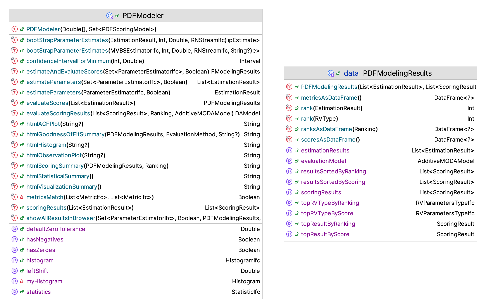
The modeling process starts with creating an instance of PDFModeler by supplying the data to be modeled and the set of scoring models to be used within the evaluation process. Then, functions can be used to perform the estimation and scoring tasks.
estimateParameters(estimators: Set<ParameterEstimatorIfc>, automaticShifting: Boolean = true)- This function estimates the parameters for all estimators represented by the supplied set of estimators. The parameter,automaticShiftingcontrols whether the data will be automatically shifted. If the automatic shift parameter is true (the default), then a confidence interval for the minimum of the data is estimated from the data. If the upper limit of the estimated confidence interval is greater than the value specified by the default zero tolerance property, then the data is shifted to the left and used in the estimation process. The estimated shift will be recorded in the result. Automated shift estimation will occur only if the automatic shifting parameter is true, if the estimator requires that its range be checked, and if the data actually requires a shift. If the automatic shifting parameter is false, then no shifting will occur. In this case it is up to the user to ensure that the supplied data is representative of the set of estimators to be estimated. The returned list will contain the results for each estimator.evaluateScores(estimationResults: List<EstimationResult>)- This function applies the supplied scoring models to the results from the parameter estimation process. Each distribution with estimated parameters will be scored by each of the supplied models and the results tabulated as an instance of thePDFModelingResultsclass.estimateAndEvaluateScores(estimators: Set<ParameterEstimatorIfc> = allEstimators, automaticShifting: Boolean = true, scoringModels: Set<PDFScoringModel> = allScoringModels)- As its name implies, this function combines the functions ofestimateParameters()andevaluateScores()into a single function for the convenience of the modeler. The returned instance of thePDFModelingResultsclass has the estimation results and the scoring results.showAllResultsInBrowser(fileName: String = "pdfModelingResults")- This function makes a histogram, observations plot, auto-correlation plot, performs the fitting and scoring process, and performs goodness of fit tests on the top scoring distribution and displays all the results by opening a browser window. The generatedhtmlfile is stored in theKSL.plotDirdirectory using the supplied name as the pre-fix for a temporary file. This one function performs all the necessary fitting steps and returns the results, including plots, within anhtmlpage.showAllGoodnessofFitSummariesInBrowser(pdfModelingResults: PDFModelingResults)- This function shows the goodness of fit summaries for every distribution used within the fitting process. This function shows the raw scores, the scaled scores, the ranked scores, and the PDF summary results for each distribution. The PDF summary results includes theFitDistPlotplots as well as the results of the Chi-Squared, K-S, Anderson Darling, and Cramer Von Mises, statistical tests. This function is very useful when comparing the quality of the fitted distributions.
The PDFModeling class encapsulates the estimation and scoring process. The purpose of this class is to serve as the general location for implementing the estimation of distribution parameters across many distributions. The general use involves the following:
val d = PDFModeler(data)
val estimationResults: List<EstimationResult> = d.estimateParameters(d.allEstimators)
val scoringResults = d.scoringResults(estimationResults)
val model = d.evaluateScoringResults(scoringResults)
scoringResults.forEach( ::println)The scoring results will be updated with the evaluation information and will contain the evaluation scores. The scoring results can be sorted to find the recommended distribution based on the evaluation score. Alternatively, the single function can be used:
val d = PDFModeler(data)
val results = d.estimateAndEvaluateScores()This function returns an instance of PDFModelingResults, which will have the results of the entire fitting process. The advantage of using the individual functions may permit some further customization of the estimation process. The PDFModelingResults class in Figure 2.9 is a data class that holds all of the results from the fitting and scoring process. In addition, the class holds an instance of the scoring model (AdditiveMODAModel), which can be used to perform additional analysis of the scores. The property sortedScoringResults provides the list of results sorted such that the top performer is the first element of the list.
To summarize, the KSL continuous distribution modeling framework allows the modeler to:
- Define and select from a set of distributions to evaluate
- Define and select from a set of parameter estimation methods
- Compute bootstrap estimates of the confidence intervals for the estimated parameters
- Define and select from a set of distribution fit quality metrics (scoring models)
- Combine scoring models into an overall measure
- Recommend the best distribution based on weighted preference among evaluation metrics
- Make observations plots, histograms, autocorrelation plots, P-P plots, Q-Q plots, and empirical distribution plots.
All of this functionality is encapsulated in the PDFModeler class. This functionality will be illustrated in Section 2.4.4.
After performing the estimation and scoring process, the modeler may want to perform statistical tests for the top performing distribution (or others). The ContinuousCDFGoodnessOfFit class facilitates the performing of the following goodness of fit tests:
- Chi-Squared
- Kolmogorov-Smirnov
- Anderson-Darling
- Cramer-Von Mises
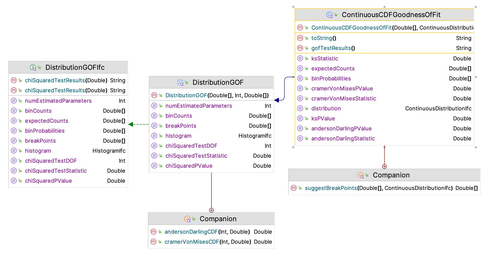
Figure 2.10 shows the framework of classes and interfaces for performing goodness of fit tests within the KSL. The main class is the ContinuousCDFGoodnessOfFit class. This class will compute the test statistics and their P-values.
The chi-squared test is the most challenging test to execute in an automated fashion. The KSL follows the recommendation found in Chapter 6 of (Law 2007) for setting up the chi-squared test. The KSL does not use arbitrary break points from a histogram generation process. Instead the KSL attempts to define the break points for the chi-squared intervals such that each interval has the same probability of occurrence. This also ensures that the expected number of observations within each interval is approximately the same. The theoretical basis for this approach can be found in (Williams 1950). (Williams 1950) considered the testing of \(U(0,1)\) random variates. In the case of the \(U(0,1)\) distribution, the choice of the number of intervals determines the break points because each interval is equally likely. (Williams 1950) recommended choosing the class limits such that the expected number in the interval was \(n/k\), where \(n\) is the number of observations and \(k\) is the number of class intervals. Based on the ability to ensure that the resulting chi-squared test statistic actually has a chi-squared distribution, (Williams 1950) recommended that the number of class intervals be:
\[ k = \Bigg\lceil 4 \, \sqrt[5]{\frac{2(n-1)^2}{z_{1-\alpha}}} \, \Bigg\rceil \]
This approach produces equally distant break points between \((0,1)\). Let’s call those break points \(u_i\) for \(i=1,\cdots,k\). We then define the break points for the chi-squared test for the distribution, \(F(x)\), as \(b_i = F^{-1}(u_i)\), which will result in non-equally spaced break points for \(F(x)\), but the probability \(p_i\) associated with the intervals will all be the same. For the resulting recommended break points, the procedure attempts to ensure that the number of intervals is at least 3 and that the expected number within the intervals is at least 5. If the number of observations of the sample, \(n\), is less than or equal to 15, this may not be possible. The procedure ensures that there are at least 3 intervals and if the expected count is less than 5 for any interval the user is warned. This same procedure is used in determining the break points for the squared error criteria. This approach reduces the sensitivity of the chi-squared fitting process and the squared error criteria to the choice of the intervals. This functionality is found in the suggestBreakPoints() function of the companion object of the ContinuousCDFGoodnessOfFit class.
As an example, the following code generates an exponentially distributed sample and applies the goodness of fit tests to the data.
Example 2.24 (Goodness of Fit Testing)
fun main() {
val d = Exponential(10.0)
val e = d.randomVariable(3)
e.advanceToNextSubStream()
val n = 1000
val data = e.sample(n)
val gof = ContinuousCDFGoodnessOfFit(data, d)
println(gof)
}The results, as expected, indicate that the data is exponentially distributed. Notice how the binning process for the data results in the bin probabilities and expected number per bin being all equal. The observed counts look pretty consistent for the intervals. Thus, the chi-squared test does not reject the hypothesis that the data is exponential with a mean of 10. In addition, the Anderson-Darling, K-S test, and Cramer Von Mises P-values indicate that we should not reject the hypothesis that the data is exponentially distributed. The showAllResultsInBrowser() function of the PDFModeler class automatically performs these goodness of fit tests for the recommended distribution from the PDF modeling process.
GOF Results for Distribution: Exponential(mean=10.0)
---------------------------------------------------------
Chi-Squared Test Results:
Bin Label P(Bin) Observed Expected
1 [ 0.00, 0.17) 0.016949 20 16.9492
2 [ 0.17, 0.34) 0.016949 14 16.9492
3 [ 0.34, 0.52) 0.016949 23 16.9492
4 [ 0.52, 0.70) 0.016949 14 16.9492
5 [ 0.70, 0.89) 0.016949 21 16.9492
6 [ 0.89, 1.07) 0.016949 21 16.9492
7 [ 1.07, 1.26) 0.016949 22 16.9492
8 [ 1.26, 1.46) 0.016949 10 16.9492
9 [ 1.46, 1.66) 0.016949 18 16.9492
10 [ 1.66, 1.86) 0.016949 12 16.9492
11 [ 1.86, 2.06) 0.016949 16 16.9492
12 [ 2.06, 2.27) 0.016949 12 16.9492
13 [ 2.27, 2.49) 0.016949 23 16.9492
14 [ 2.49, 2.71) 0.016949 15 16.9492
15 [ 2.71, 2.93) 0.016949 17 16.9492
16 [ 2.93, 3.16) 0.016949 14 16.9492
17 [ 3.16, 3.40) 0.016949 21 16.9492
18 [ 3.40, 3.64) 0.016949 13 16.9492
19 [ 3.64, 3.89) 0.016949 11 16.9492
20 [ 3.89, 4.14) 0.016949 20 16.9492
21 [ 4.14, 4.40) 0.016949 18 16.9492
22 [ 4.40, 4.67) 0.016949 19 16.9492
23 [ 4.67, 4.94) 0.016949 23 16.9492
24 [ 4.94, 5.22) 0.016949 19 16.9492
25 [ 5.22, 5.51) 0.016949 17 16.9492
26 [ 5.51, 5.81) 0.016949 18 16.9492
27 [ 5.81, 6.12) 0.016949 12 16.9492
28 [ 6.12, 6.44) 0.016949 17 16.9492
29 [ 6.44, 6.76) 0.016949 16 16.9492
30 [ 6.76, 7.10) 0.016949 13 16.9492
31 [ 7.10, 7.45) 0.016949 18 16.9492
32 [ 7.45, 7.82) 0.016949 17 16.9492
33 [ 7.82, 8.19) 0.016949 21 16.9492
34 [ 8.19, 8.59) 0.016949 17 16.9492
35 [ 8.59, 8.99) 0.016949 25 16.9492
36 [ 8.99, 9.42) 0.016949 9 16.9492
37 [ 9.42, 9.86) 0.016949 14 16.9492
38 [ 9.86,10.33) 0.016949 15 16.9492
39 [10.33,10.82) 0.016949 13 16.9492
40 [10.82,11.33) 0.016949 12 16.9492
41 [11.33,11.87) 0.016949 18 16.9492
42 [11.87,12.44) 0.016949 23 16.9492
43 [12.44,13.05) 0.016949 20 16.9492
44 [13.05,13.69) 0.016949 9 16.9492
45 [13.69,14.38) 0.016949 14 16.9492
46 [14.38,15.13) 0.016949 16 16.9492
47 [15.13,15.93) 0.016949 13 16.9492
48 [15.93,16.80) 0.016949 22 16.9492
49 [16.80,17.75) 0.016949 15 16.9492
50 [17.75,18.80) 0.016949 18 16.9492
51 [18.80,19.98) 0.016949 23 16.9492
52 [19.98,21.32) 0.016949 23 16.9492
53 [21.32,22.86) 0.016949 25 16.9492
54 [22.86,24.68) 0.016949 9 16.9492
55 [24.68,26.91) 0.016949 14 16.9492
56 [26.91,29.79) 0.016949 16 16.9492
57 [29.79,33.84) 0.016949 15 16.9492
58 [33.84,40.78) 0.016949 15 16.9492
59 [40.78,155.00) 0.016949 22 16.9490
Number of estimated parameters = 1
Number of intervals = 59
Degrees of Freedom = 57
Chi-Squared Test Statistic = 61.52812706136465
P-value = 0.31723313805973075
Hypothesis test at 0.05 level:
The p-value = 0.31723313805973075 is >= 0.05 : Do not reject hypothesis.
Goodness of Fit Test Results:
K-S test statistic = 0.017687069238841113
K-S test p-value = 0.9075526348536717
Anderson-Darling test statistic = 0.3610051171259556
Anderson-Darling test p-value = 0.8863125779601514
Cramer-Von-Mises test statistic = 0.043345445388941854
Cramer-Von-Mises test p-value = 0.91528156463299592.4.3 Discrete Distribution Framework
For discrete distributions, the KSL provides the PMFModeler class. Since there are less discrete distributions within the KSL than continuous distributions, the PMFModeler class does not provide the full range of functionality provided by the PDFModeler class. Instead the PMFModeler class focuses on estimating the parameters of discrete distributions. Similar to how the PDFModeler class functions, the PMFModeler has an estimateParameters() function that uses a set of objects that implement the ParameterEstimatorIfc interface. The default set of discrete distributions includes the Poisson, negative binomial, and the binomial distributions. Of course users can define additional discrete distributions and implement parameter estimators for those distributions.
Figure 2.11 presents the PMF estimation framework. As indicated the key function is the estimateParameters() function. Note also that the companion object for the PMFModeler class has the function equalizedPMFBreakPoints(), which can be useful during the goodness of fit testing of the distribution. The purpose of the function is to attempt to form intervals that have similar probabilities.
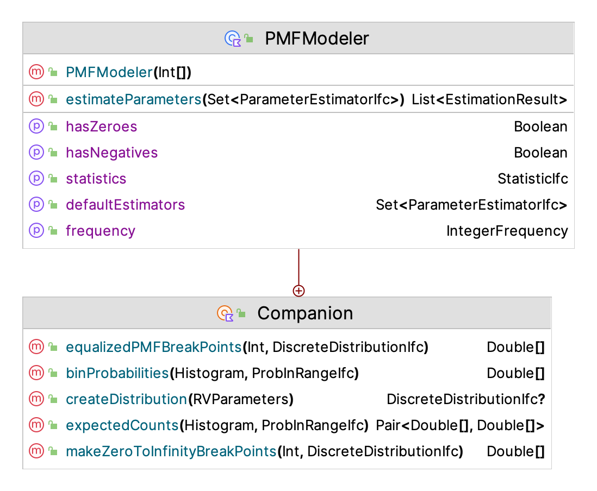
The application of the estimateParameters() function results in the creation of a list that contains instances of EstimationResult, one for each of the estimation methods.
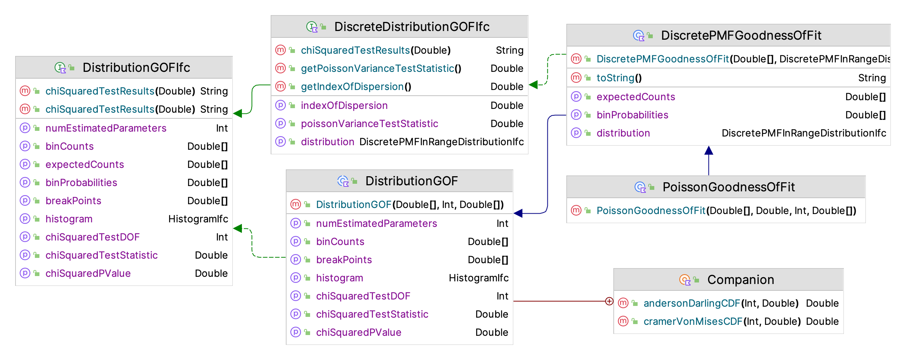
Given the limited number of discrete distributions, the KSL does not provide a scoring model approach for selecting the best distribution. Instead, the DiscretePMFGoodnessOfFit class, illustrated in Figure 2.12 can be used to check the goodness of fit for the discrete distribution. The primary method for testing the goodness of it is the chi-squared goodness of fit test. Similar to how the continuous distribution defines break points that result in approximately equal probabilities for the bins and expected counts, the KSL attempts to form intervals for the chi-squared test that have approximately equal probabilities. The following code illustrates how to fit a negative binomial distribution to some randomly generated data.
Example 2.25 (Discrete Goodness of Fit Testing)
fun main() {
val dist = NegativeBinomial(0.2, theNumSuccesses = 4.0)
val rv = dist.randomVariable(streamNumber = 3)
rv.advanceToNextSubStream()
val data = rv.sample(200)
val breakPoints = PMFModeler.makeZeroToInfinityBreakPoints(data.size, dist)
val pf = DiscretePMFGoodnessOfFit(data, dist, breakPoints = breakPoints)
println(pf.chiSquaredTestResults())
}The results indicate the challenge of trying to make bins with equal probability for discrete distributions. In general, it may not be possible to do so. Thus, the modeler is encouraged to update the break points as needed during the distribution assessment process. As expected the results indicate that we should not reject the hypothesis of a negative binomial distribution for this situation.
Chi-Squared Test Results:
Bin Label P(Bin) Observed Expected
1 [ 0.00, 3.00) 0.016960 4 3.39200 *** Warning: expected < 5 ***
2 [ 3.00, 5.00) 0.039322 7 7.86432
3 [ 5.00, 6.00) 0.029360 10 5.87203
4 [ 6.00, 7.00) 0.035232 7 7.04643
5 [ 7.00, 8.00) 0.040265 7 8.05306
6 [ 8.00, 9.00) 0.044292 5 8.85837
7 [ 9.00,10.00) 0.047245 10 9.44893
8 [10.00,11.00) 0.049134 9 9.82689
9 [11.00,12.00) 0.050028 6 10.0056
10 [12.00,13.00) 0.050028 11 10.0056
11 [13.00,14.00) 0.049258 6 9.85162
12 [14.00,15.00) 0.047851 12 9.57015
13 [15.00,16.00) 0.045937 7 9.18734
14 [16.00,17.00) 0.043640 17 8.72798
15 [17.00,18.00) 0.041073 4 8.21457
16 [18.00,19.00) 0.038335 7 7.66693
17 [19.00,20.00) 0.035510 7 7.10200
18 [20.00,21.00) 0.032669 9 6.53384
19 [21.00,22.00) 0.029869 5 5.97379
20 [22.00,23.00) 0.027154 3 5.43072
21 [23.00,24.00) 0.024556 4 4.91126 *** Warning: expected < 5 ***
22 [24.00,26.00) 0.041903 13 8.38058
23 [26.00,28.00) 0.033376 9 6.67520
24 [28.00,31.00) 0.036998 6 7.39969
25 [31.00,36.00) 0.036799 7 7.35973
26 [36.00,Infinity) 0.033207 8 6.64147
Number of estimated parameters = 2
Number of intervals = 26
Degrees of Freedom = 23
Chi-Squared Test Statistic = 25.69659399548871
P-value = 0.31539706650371313
Hypothesis test at 0.05 level:
The p-value = 0.31539706650371313 is >= 0.05 : Do not reject hypothesis.2.4.4 Illustrative Examples from Appendix B
This section illustrates how to use the KSL probability distribution modeling frameworks by applying the previously discussed constructs to two examples from Appendix B. We will start with the fitting of Poisson distribution to the data from Example B.1, which is repeated here for convenience. The data associated with the examples of this section can be found in the chapter files with in the KSLExamples project associated with the KSL source code repository.
Note
Distribution fitting often requires visualizing the data. The KSL provides support for making plots via the lets-plot library. Section E.8 of Appendix E illustrates the basics of KSL plotting functionality. This section illustrates some plots that are important for distribution modeling.
Example 2.26 (Fitting a Poisson Distribution) Suppose that we are interested in modeling the demand for a computer laboratory during the morning hours between 9 am to 11 am on normal weekdays. During this time a team of undergraduate students has collected the number of students arriving to the computer lab during 15 minute intervals over a period of 4 weeks.
Since there are four 15 minute intervals in each hour for each two hour time period, there are 8 observations per day. Since there are 5 days per week, we have 40 observations per week for a total of \(40\times 4= 160\) observations. A sample of observations per 15 minute interval are presented in Table 2.1. The full data set is available with the chapter files. Check whether a Poisson distribution is an appropriate model for this data.
| Week | Period | M | T | W | TH | F |
|---|---|---|---|---|---|---|
| 1 | 9:00-9:15 am | 8 | 5 | 16 | 7 | 7 |
| 1 | 9:15-9:30 am | 8 | 4 | 9 | 8 | 6 |
| 1 | 9:30-9:45 am | 9 | 5 | 6 | 6 | 5 |
| 1 | 9:45-10:00 am | 10 | 11 | 12 | 10 | 12 |
| 1 | 10:00-10:15 am | 6 | 7 | 14 | 9 | 3 |
| 1 | 10:15-10:30 am | 11 | 8 | 7 | 7 | 11 |
| 1 | 10:30-10:45 am | 12 | 7 | 8 | 3 | 6 |
| 1 | 10:45-11:00 am | 8 | 9 | 9 | 8 | 6 |
| 2 | 9:00-9:15 am | 10 | 13 | 7 | 7 | 7 |
| 3 | 9:00-9:15 am | 5 | 7 | 14 | 8 | 8 |
| 4 | 9:00-9:15 am | 7 | 11 | 8 | 5 | 4 |
| 4 | 10:45-11:00 am | 8 | 9 | 7 | 9 | 6 |
Since the testing of dependence on the day of the week or the period of observation was already performed in Appendix B, we focus on the distribution fitting process in this demonstration of the KSL constructs. Here, we need to fit a Poisson distribution to the data. The first step is reading the data from the CSV file. This can be readily accomplished by using the CSV file reading capabilities of Kotlin’s DataFrame library. The following code uses the KSL’s KSLFileUtil object to open a file choosing dialog for the user to select the file, which then has its contents read in using the CSV file processing function for the DataFrame object. This data is converted into an integer array and returned. A discussion of CSV file processing and data frames can be found in Section E.4 and Section E.5 of Appendix E.
fun readCountData(): IntArray {
// choose file: KSL/KSLExamples/chapterFiles/Appendix-Distribution Fitting/PoissonCountData.csv
val file = KSLFileUtil.chooseFile()
if (file != null) {
val df = DataFrame.readCSV(
file,
colTypes = mapOf(
"week" to ColType.Int,
"period" to ColType.Int,
"day" to ColType.String,
"count" to ColType.Int
)
)
val count by column<Int>()
val countData: DataColumn<Int> = df[count]
return countData.toIntArray()
}
return IntArray(0)
}Once the data is an array, the KSL’s discrete distribution framework can be easily applied. In the following code, the data is used to visualize the count data in the form of an integer frequency plot, which we can use like a histogram to view the distribution of the data and see if it has a shape that would support the hypothesis of a Poisson distribution.
val data = readCountData()
val f = IntegerFrequency(data)
val fp = f.frequencyPlot()
fp.showInBrowser()
fp.saveToFile("Lab_Count_Freq_Plot")Figure 2.13 clearly indicates that the Poisson distribution is a candidate model.
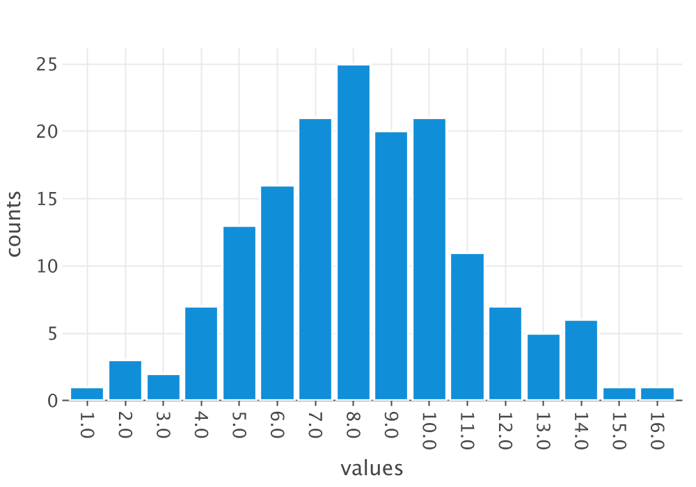
The following code will create a time series observation plot of the data and an auto correlation plot of the data. The use of both of these plots for analysis of data is discussed in Appendix B. This code will also save the plots to files and display the plots within a browser window.
val op = ObservationsPlot(data)
op.saveToFile("Lab_Count_Obs_Plot")
op.showInBrowser()
val acf = ACFPlot(data.toDoubles())
acf.saveToFile("Lab_Count_ACF_Plot")
acf.showInBrowser()
println(f)Just as in Appendix B, the time series plot does not indicate a trend or pattern with respect to time as shown in Figure 2.14.
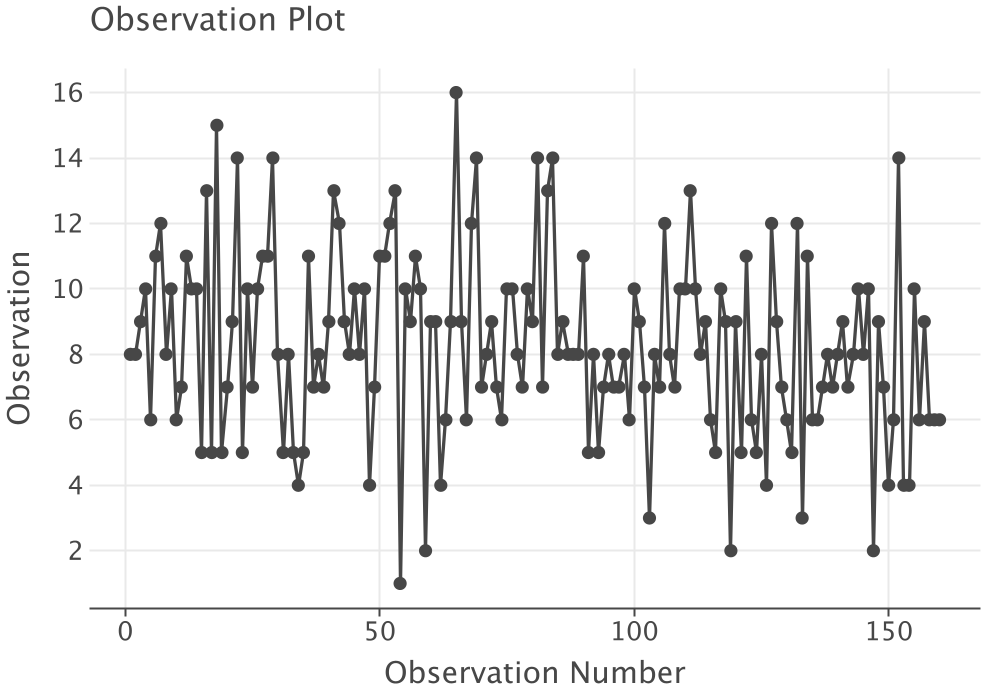
Again, the ACF plot, see Figure 2.15, does not indicate that the data has any significant concerns with respect to autocorrelation.
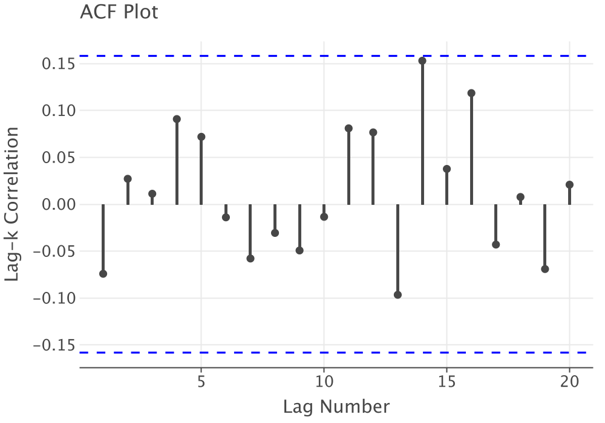
Because the plots indicate that the data is likely to be independent and identically distributed, it appears that it should be safe to proceed with the distribution modeling task. The following code will estimate the parameters, perform a goodness of fit test, and display a plot that compares the theoretical PMF to the empirical PMF.
val pmfModeler = PMFModeler(data)
val results = pmfModeler.estimateParameters(setOf(PoissonMLEParameterEstimator))
val e = results.first()
println(e)
val mean = e.parameters!!.doubleParameter("mean")
val pf = PoissonGoodnessOfFit(data.toDoubles(), mean = mean)
println(pf)
val plot = PMFComparisonPlot(data, pf.distribution)
plot.saveToFile("Lab_Count_PMF_Plot")
plot.showInBrowser()The code first creates an instance of the PMFModeler class to perform the estimation. In this situation, only the estimator for the Poisson distribution is specified as input to the estimateParameters() function. The estimated mean of the distribution is extracted from the estimated parameters and used for the PoissonGoodnessOfFit class. The PoissonGoodnessOfFit class is a straight-forward sub-class of DiscretePMFGoodnessOfFit class. The results of the fit are printed and then the PMF comparison plot is created.
Shift estimation results:
null
Estimated parameters:
RV Type = Poisson
Double Parameters {mean=8.275000000000002}
Integer Parameters {}
Double Array Parameters {}
Chi-Squared Test Results:
Bin Label P(Bin) Observed Expected
1 [ 0.00, 4.00) 0.035151 6 5.62421
2 [ 4.00, 5.00) 0.049782 7 7.96515
3 [ 5.00, 6.00) 0.082390 13 13.1823
4 [ 6.00, 7.00) 0.113629 16 18.1806
5 [ 7.00, 8.00) 0.134326 21 21.4921
6 [ 8.00, 9.00) 0.138943 25 22.2309
7 [ 9.00,10.00) 0.127750 20 20.4401
8 [10.00,11.00) 0.105713 21 16.9141
9 [11.00,12.00) 0.079525 11 12.7241
10 [12.00,13.00) 0.054839 7 8.77429
11 [13.00,14.00) 0.034907 5 5.58518
12 [14.00,Infinity) 0.043044 8 6.88700
Number of estimated parameters = 1
Number of intervals = 12
Degrees of Freedom = 10
Chi-Squared Test Statistic = 2.5923612067415056
P-value = 0.9894603477732713
Hypothesis test at 0.05 level:
The p-value = 0.9894603477732713 is >= 0.05 : Do not reject hypothesis.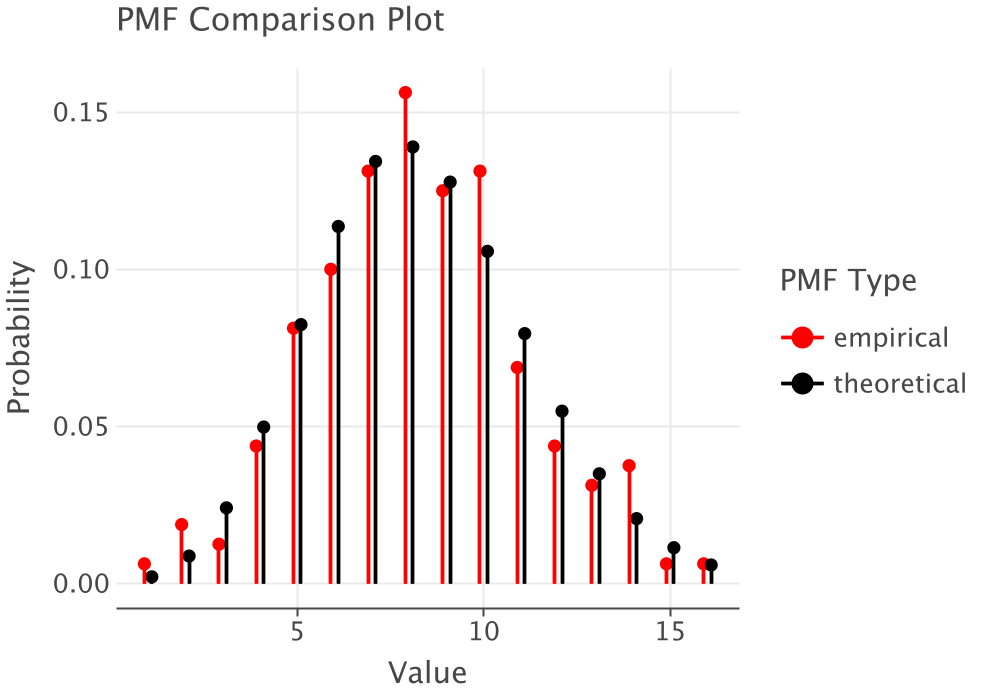
The results of the goodness of fit test and the PMF comparison plot, Figure 2.16, clearly indicate that the Poisson distribution should not be rejected as a model for this data.
The follow example repeats the analysis of Section B.5.6 on the pharmacy service time data using KSL constructs.
Example 2.27 (Analyzing the Pharmacy Data using the KSL) One hundred observations of the service time were collected using a portable digital assistant and are shown in Table 2.2 where the first observation is in row 1 column 1, the second observation is in row 2 column 1, the \(21^{st}\) observation is in row 1 column 2, and so forth.
| 61 | 278.73 | 194.68 | 55.33 | 398.39 |
| 59.09 | 70.55 | 151.65 | 58.45 | 86.88 |
| 374.89 | 782.22 | 185.45 | 640.59 | 137.64 |
| 195.45 | 46.23 | 120.42 | 409.49 | 171.39 |
| 185.76 | 126.49 | 367.76 | 87.19 | 135.6 |
| 268.61 | 110.05 | 146.81 | 59 | 291.63 |
| 257.5 | 294.19 | 73.79 | 71.64 | 187.02 |
| 475.51 | 433.89 | 440.7 | 121.69 | 174.11 |
| 77.3 | 211.38 | 330.09 | 96.96 | 911.19 |
| 88.71 | 266.5 | 97.99 | 301.43 | 201.53 |
| 108.17 | 71.77 | 53.46 | 68.98 | 149.96 |
| 94.68 | 65.52 | 279.9 | 276.55 | 163.27 |
| 244.09 | 71.61 | 122.81 | 497.87 | 677.92 |
| 230.68 | 155.5 | 42.93 | 232.75 | 255.64 |
| 371.02 | 83.51 | 515.66 | 52.2 | 396.21 |
| 160.39 | 148.43 | 56.11 | 144.24 | 181.76 |
| 104.98 | 46.23 | 74.79 | 86.43 | 554.05 |
| 102.98 | 77.65 | 188.15 | 106.6 | 123.22 |
| 140.19 | 104.15 | 278.06 | 183.82 | 89.12 |
| 193.65 | 351.78 | 95.53 | 219.18 | 546.57 |
Recall the basic process described in Appendix B. We will plot the data using a histogram, make a time series observation plot, and make an ACF plot. The following code performs those tasks. The plots can be shown in a browser window or saved to files.
val data = KSLFileUtil.scanToArray(myFile.toPath())
val d = PDFModeler(data)
println(d.histogram)
println()
val hPlot = d.histogram.histogramPlot()
hPlot.showInBrowser()
val op = ObservationsPlot(data)
op.showInBrowser()
val acf = ACFPlot(data)
acf.showInBrowser()This results in the following histogram summary, which clearly indicates that the data is shifted from zero to about 36.
-------------------------------------
Number of bins = 6
First bin starts at = 36.0
Last bin ends at = 786.0
Under flow count = 0.0
Over flow count = 0.0
Total bin count = 100.0
Total count = 100.0
-------------------------------------
Bin Range Count CumTot Frac CumFrac
1 [36.00,161.00) = 60 60.0 0.600000 0.600000
2 [161.00,286.00) = 22 82.0 0.220000 0.820000
3 [286.00,411.00) = 10 92.0 0.100000 0.920000
4 [411.00,536.00) = 6 98.0 0.060000 0.980000
5 [536.00,661.00) = 1 99.0 0.010000 0.990000
6 [661.00,786.00) = 1 100.0 0.010000 1.000000
-------------------------------------Figure 2.17 clearly shows an exponential shape for the distribution.
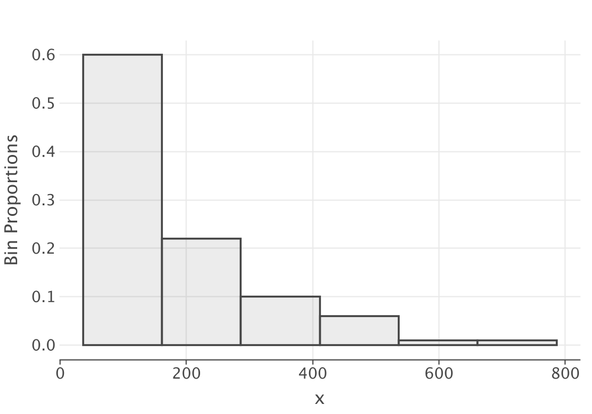
Similar to the analysis in Appendix B, the time series plot, Figure 2.18, and the ACF plot, Figure 2.19 do not indicate any issues with non-stationary behavior or with dependence within the observations.
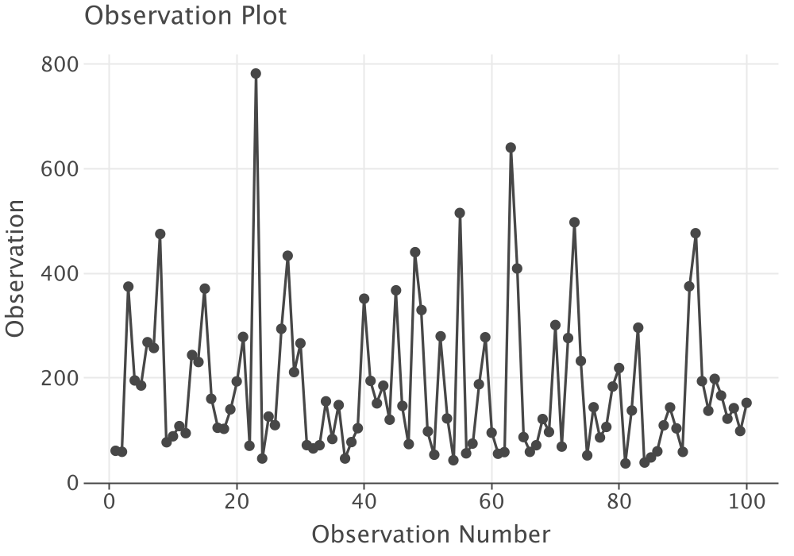
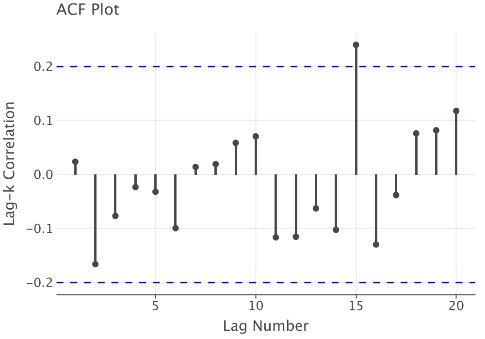
Given this analysis, we can proceed with modeling the distribution and checking for the goodness of fit. The following KSL code will estimate the parameters of the default distributions within the KSL and recommend a candidate distribution. Notice that the shift parameter will be automatically estimated for this situation.
val results = d.estimateAndEvaluateScores()
println("PDF Estimation Results for each Distribution:")
println("------------------------------------------------------")
results.sortedScoringResults.forEach(::println)
val topResult = results.sortedScoringResults.first()
val scores = results.evaluationModel.alternativeScoresAsDataFrame("Distributions")
println(scores)
println()
val values = results.evaluationModel.alternativeValuesAsDataFrame("Distributions")
println(values)
println()
val distPlot = topResult.distributionFitPlot()
distPlot.showInBrowser("Recommended Distribution ${topResult.name}")
println()
println("** Recommended Distribution** ${topResult.name}")
println()The following table displays the distribution fitting scores for the Bayesian Information Criterion (BIC), Anderson-Darling (AD), Cramer Von Mises (CVM), and Q-Q plot correlation criteria.
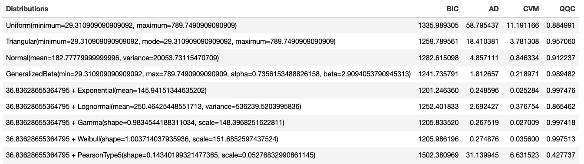
By applying the value scoring model and sorting, we can see in Figure 2.21 that the top performing distribution is the exponential distribution with an overall value of 0.9484545. Thus, the recommended distribution is: 36.83628655364795 + Exponential(mean=145.94151344635202). Notice that the shift parameter was automatically estimated for this situation.
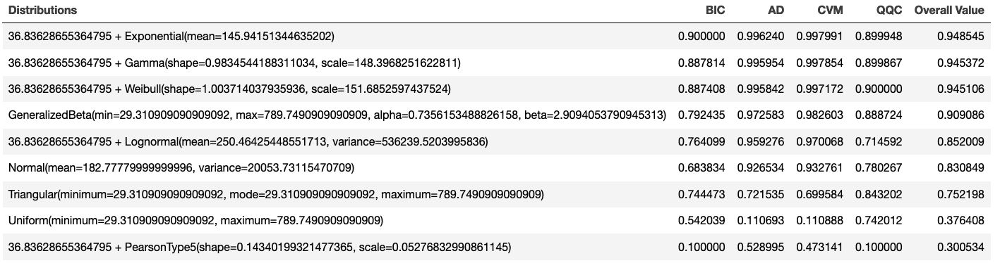
The KSL distribution recommendation framework also evaluates each distribution based on the rank obtained by each metric. The distribution that had the most first place ranks can be considered the top performing distribution. As shown in Figure 2.22, we again see that the exponential distribution is the top distribution based on rankings.
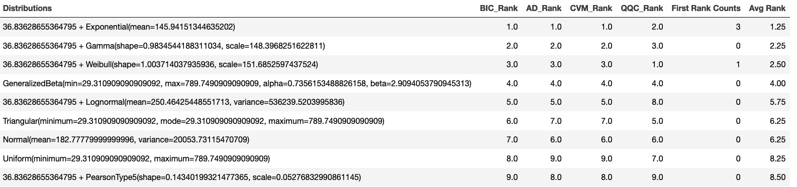
If you are unsure of the recommended distribution or you want to better understand the sensitivity of the recommendation, the PDFModeler companion object provides support for bootstrapping the distribution family recommendation. Assuming that the observations are in an array called data, the following code will repeatedly sample from the data using a bootstrapping approach to tabulate the frequency that each possible distribution is recommended by the framework.
val df = PDFModeler.bootstrapFamilyFrequencyAsDataFrame(data)
println(df)Running the bootstrapping family frequency tabulation process on the pharamacy model data yields the following results.
Distribution Ranked First cum_count proportion cumProportion
0 Triangular 1.0 1.0 0.0025 0.002500
1 GeneralizedBeta 2.0 3.0 0.0050 0.007500
2 Exponential 321.0 324.0 0.8025 0.810000
3 Gamma 76.0 400.0 0.1900 1.000000Clearly, the exponential distribution is the most likely distribution to be recommended using the average scoring criterion. This process can be used before going through the PDF modeling process to suggest distributions to consider, or, as done here, it can be performed after the distribution recommendation process to provide some confidence in the recommended distribution.
After we are comfortable with the recommended distribution, we can use the following code to perform a goodness of fit analysis.
val gof = ContinuousCDFGoodnessOfFit(topResult.estimationResult.testData,
topResult.distribution,
numEstimatedParameters = topResult.numberOfParameters
)
println(gof)The results of the goodness of fit analysis clearly indicate that we should not reject the exponential distribution. Notice that the results are for the shifted distribution.
GOF Results for Distribution: Exponential(mean=145.94151344635202)
---------------------------------------------------------
Chi-Squared Test Results:
Bin Label P(Bin) Observed Expected
1 [ 0.00, 7.49) 0.050000 3 5.00000
2 [ 7.49,15.38) 0.050000 4 5.00000
3 [15.38,23.72) 0.050000 8 5.00000
4 [23.72,32.57) 0.050000 3 5.00000
5 [32.57,41.98) 0.050000 8 5.00000
6 [41.98,52.05) 0.050000 4 5.00000
7 [52.05,62.87) 0.050000 5 5.00000
8 [62.87,74.55) 0.050000 8 5.00000
9 [74.55,87.25) 0.050000 4 5.00000
10 [87.25,101.16) 0.050000 2 5.00000
11 [101.16,116.54) 0.050000 9 5.00000
12 [116.54,133.72) 0.050000 3 5.00000
13 [133.72,153.21) 0.050000 4 5.00000
14 [153.21,175.71) 0.050000 6 5.00000
15 [175.71,202.32) 0.050000 3 5.00000
16 [202.32,234.88) 0.050000 4 5.00000
17 [234.88,276.87) 0.050000 7 5.00000
18 [276.87,336.04) 0.050000 4 5.00000
19 [336.04,437.20) 0.050000 5 5.00000
20 [437.20,1596.00) 0.049982 6 4.99822 *** Warning: expected < 5 ***
Number of estimated parameters = 1
Number of intervals = 20
Degrees of Freedom = 18
Chi-Squared Test Statistic = 16.000784446070348
P-value = 0.5924925929222188
Hypothesis test at 0.05 level:
The p-value = 0.5924925929222188 is >= 0.05 : Do not reject hypothesis.
Goodness of Fit Test Results:
K-S test statistic = 0.0399213095618332
K-S test p-value = 0.9954253138552503
Anderson-Darling test statistic = 0.24859556182926212
Anderson-Darling test p-value = 0.9710833730000956
Cramer-Von-Mises test statistic = 0.025283543923658194
Cramer-Von-Mises test p-value = 0.9893094979248238Finally, we can review the distribution plot, Figure 2.23, and see that according the the P-P plot, Q-Q plot, histogram overlay, and empirical cumulative distribution overlay plot that the exponential distribution is an excellent probability model for this data.
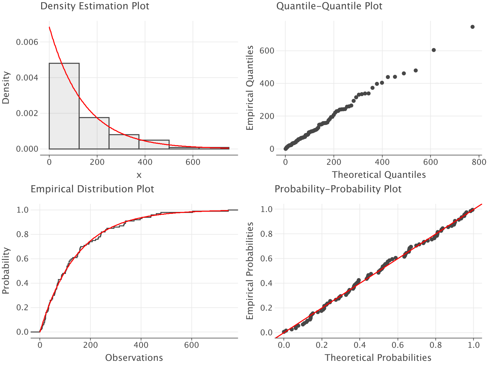
All the previously illustrated analysis can be performed with a few lines of code:
val data = KSLFileUtil.scanToArray(myFile.toPath())
val d = PDFModeler(data)
d.showAllResultsInBrowser()Finally, if you want to analyze a specific distribution, then you can access the results from the returned instance of the PDFModelingResults class. For example, if we want to analyze the second best distribution we can access the results for the second best distribution and display its results. Assuming that the data to be analyzed is in an array called data, the following code illustrates how to accomplish this task.
val d = PDFModeler(data)
// capture the PDFModelingResults
val results = d.estimateAndEvaluateScores()
val sortedResults: List<ScoringResult> = results.resultsSortedByScoring
// the array is 0 based, so the element at 1 is the 2nd best
val result: ScoringResult = sortedResults[1]
KSLFileUtil.openInBrowser(
fileName = "PDF_Goodness_Of_Fit_Results",
d.htmlGoodnessOfFitSummary(result)
)To see the results for every distribution, just use the showAllGoodnessOfFitSummariesInBrowser function.
val d = PDFModeler(data)
val results = d.estimateAndEvaluateScores()
d.showAllGoodnessOfFitSummariesInBrowser(results)The functionally for distribution modeling within the KSL is on par with what you can find within commercial software.
2.5 Summary
The KSL contains packages that support the generation of random numbers, random variates, and the modeling of probability distributions that are commonly found in practice. These constructs facilitate the incorporation of randomness within simulation modeling. The following additional classes may be of interest:
ShiftedRV- models random variables that have their domain shifted to the rightMixtureRV- models random variables that are expressed as a mixture distribution. That is, a distribution that is a weighted mixture of other distributionsAcceptanceRejectionRV- permits the implementation of the acceptance and rejection algorithm for generating random variates in a general mannerInverseCDFRV- facilitates the implementation of the inverse transform method via bisection search of the CDFRatioOfUniformsRV- facilitates the implementation of the ratio of uniforms method for generating random variates
In addition, the KSL has additional utilities that assist the modeler with common aspects of working with arrays and generating arrays of data. That is, the generation of multi-variate random vectors of data. The following classes may be of interest for situations involving multi-variate distributions:
RArrays- defines extension functions for randomly sampling from arrays and some listsMVSampleIfc- defines the interface for generating random arrays of dataMVRVariableIfc- the multi-variate analog for theRVariableIfcMVRVariable- an abstract base class for defining multi-variate random variablesMVIndependentMarginals- a concrete implementation for generating independent vectors that have specified random variates for each coordinate of the vector.
Some of these more advanced capabilities will be illustrated in future chapters.
2.6 Exercises
Exercise 2.1 Complete the crossword puzzle found here. Turn in your completed puzzle.
Exercise 2.2 Consider the following discrete distribution of the random variable \(X\) whose probability mass function is \(p(x)\).
| \(x\) | 0 | 1 | 2 | 3 | 4 |
|---|---|---|---|---|---|
| \(p(x)\) | 0.3 | 0.2 | 0.2 | 0.1 | 0.2 |
Write a KSL program to generate 4 random variates from this distribution using stream 1.
Exercise 2.3 Suppose that customers arrive at an ATM via a Poisson process with mean 7 per hour. Write a KSL program that outputs the arrival time of the first 6 customers using stream 1.
Exercise 2.4 The service times for a automated storage and retrieval system has a shifted exponential distribution. It is known that it takes a minimum of 15 seconds for any retrieval. The rate parameter of the exponential distribution is \(\lambda = 45\). Write a KSL program to generate 10 observations from this distribution using stream 1.
Exercise 2.5 The time to failure for a computer printer fan has a Weibull distribution with shape parameter \(\alpha = 2\) and scale parameter \(\beta = 3\). Testing has indicated that the distribution is limited to the range from 1.5 to 4.5. Write a KSL program to generate 10 observations from this distribution using stream 1.
Exercise 2.6 The interest rate for a capital project is unknown. An accountant has estimated that the minimum interest rate will between 2% and 5% within the next year. The accountant believes that any interest rate in this range is equally likely. You are tasked with generating interest rates for a cash flow analysis of the project. Write a KSL program to generate 10 observations from this distribution using stream 1.
Exercise 2.7 Consider the following probability density function:
\[f(x) = \begin{cases} \dfrac{3x^2}{2} & -1 \leq x \leq 1\\ 0 & \text{otherwise} \\ \end{cases}\]
Write a KSL program to generate 10 observations from this distribution using stream 1 using the inverse transform technique.
Exercise 2.8 Consider the following probability density function:
\[f(x) = \begin{cases} 0.5x - 1 & 2 \leq x \leq 4\\ 0 & \text{otherwise} \\ \end{cases}\]
Write a KSL program to generate 10 observations from this distribution using stream 1 using the inverse transform technique.
Exercise 2.9 Consider the following probability density function:
\[f(x) = \begin{cases} \dfrac{2x}{25} & 0 \leq x \leq 5\\ 0 & \text{otherwise} \\ \end{cases}\]
Write a KSL program to generate 10 observations from this distribution using stream 1 using the inverse transform technique.
Exercise 2.10 Consider the following probability density function:
\[f(x) = \begin{cases} \dfrac{2}{x^3} & x > 1\\ 0 & x \leq 1\\ \end{cases}\]
Write a KSL program to generate 10 observations from this distribution using stream 1 using the inverse transform technique.
Exercise 2.11 The times to failure for an automated production process have been found to be randomly distributed according to a Rayleigh distribution:
\[\ f(x) = \begin{cases} 2 \beta^{-2} x e^{(-(x/\beta)^2)} & x > 0\\ 0 & \text{otherwise} \end{cases}\]
Write a KSL program to generate 10 observations from this distribution using stream 1 using the inverse transform technique.
Exercise 2.12 Suppose that the processing time for a job consists of two distributions. There is a 30% chance that the processing time is lognormally distributed with a mean of 20 minutes and a standard deviation of 2 minutes, and a 70% chance that the time is uniformly distributed between 10 and 20 minutes.
Write a KSL program to generate 10 observations from this distribution using stream 1.
Exercise 2.13 Suppose that the service time for a patient consists of two distributions. There is a 25% chance that the service time is uniformly distributed with minimum of 20 minutes and a maximum of 25 minutes, and a 75% chance that the time is distributed according to a Weibull distribution with shape of 2 and a scale of 4.5.
Write a KSL program to generate 10 observations from this distribution using stream 1.
Exercise 2.14 Consider the following probability density function:
\[f(x) = \begin{cases} \dfrac{3x^2}{2} & -1 \leq x \leq 1\\ 0 & \text{otherwise} \\ \end{cases}\]
Write a KSL program to generate 10 observations from this distribution using the acceptance-rejection technique. Use stream 1 in your implementation.
Exercise 2.15 Consider the following function:
\[f(x) = \begin{cases} cx^{2} & a \leq x \leq b\\ 0 & \text{otherwise} \\ \end{cases} \]
- Determine the value of \(c\) that will turn \(g(x)\) into a probability density function. The resulting probability density function is called a parabolic distribution.
- Denote the probability density function found in part (a), \(f(x)\). Let \(X\) be a random variable from \(f(x)\). Derive the inverse cumulative distribution function for \(f(x)\).
- Write a KSL program to generate 10 observations from this distribution over the range of \(a=4\) and \(b=12\) using your work from part (a) and (b). Use stream 1 in your implementation.
Exercise 2.16 Consider the following probability density function:
\[f(x) = \begin{cases} \frac{3(c - x)^{2}}{c^{3}} & 0 \leq x \leq c\\ 0 & \text{otherwise} \\ \end{cases} \]
Derive an inverse cumulative distribution algorithm for generating from \(f(x)\). Write a KSL program to generate 10 observations from this distribution for \(c=5\). Use stream 1 in your implementation.